日本語完全ガイド：本文と補助教材
以下は v0.2.0 の日本語本文です。英語表示を選んでも、この部分は日本語で掲載します。第11章は構成案です。図解部分に、このゲームの採用範囲と実装上の差異を記載しています。
出典：bao-la-kiswahili-ja contributors（2026）「Bao la Kiswahili 日本語完全ガイド」v0.2.0。本文は固定版から収録し、HTML化・リンク変換・見出し階層の調整を行いました。文章と自作図版は CC BY-SA 4.0。外部資料には適用されません。
はじめに
Bao la Kiswahiliは、穴に入ったkete（駒）を蒔き、相手のketeを捕獲する2人用ゲームです。短い基本操作の中に、強制される捕獲、1手の途中で何度も続く蒔き、特別な穴nyumbaなどが組み合わさっています。
本書は、Bao la Kiswahiliを初めて学ぶ日本語話者のためのガイドです。単なる用語の翻訳ではなく、盤を準備し、合法手を選び、一局を最後まで進められることを目標にしています。
本書が扱うルール
中心にするのは、Alex de Voogtが1990年代前半にザンジバルの競技者から記録したルール系統です。本書ではこれを「ザンジバル版」と呼びます。この呼び方は、ザンジバルで行われるすべてのBaoが完全に同じだという意味ではありません。
de Voogt (1995) の全文は2026-10-08に入手しました。takasiaと主要規則を同書の規則章・Donkers (2003) の形式規則・後年の著者解説と項目別に照合しました。5個のnyumbaから始める手の境界、現在の大会での運用、外部人物のレビューは残っています。資料差や残る制約には「確認メモ」を付けます。公開前の検証記録で確認範囲と公開条件を説明します。
読み方
初めて遊ぶ場合は、Bao la Kiswahiliとはから終局と勝敗まで順に読んでください。特に、次の3段階に分けると理解しやすくなります。
- 盤と初期配置を覚える。
- namuaとmtajiで、手を始める方法を覚える。
- 捕獲、relay sowing、nyumbaの例外を重ねる。
本文では「初心者向け説明」で全体像を示し、「正式ルール」で条件を詳しく述べます。「具体例」は手順の確認用です。資料差や未確認事項は「地域差・確認メモ」へ分け、確定事項と混ぜません。
用語について
namua、mtaji、nyumba、kichwa、kimbiなどは、無理に日本語へ置き換えません。初出時に短い説明を添え、一覧は用語辞典にまとめます。
参考文献
各章の根拠記号 R-001 などは、参考文献の番号に対応します。ルールの基準と未確認事項はザンジバル版ルール基準調査でも確認できます。
Bao la Kiswahiliとは
初心者向け説明
Bao la Kiswahiliは、mancala（マンカラ）と総称されるゲーム群の一つです。2人が向かい合い、自分側の穴にあるketeを1個ずつ順に置く「蒔き」を行います。
目的は、相手の前列を空にすること、または相手が合法手を行えない状態にすることです。捕獲したketeは盤外へ取り除きません。自分側へ持ってきて、その手の中ですぐ蒔き直します。そのため、1回の捕獲が長い連続手へ発展することがあります。
ゲームの全体像
一局は次の2段階に分かれます。
namua: 各プレイヤーの手元にあるketeを、1手ごとに1個ずつ盤へ入れる前半段階です。mtaji: すべてのketeが盤上へ入った後、穴の中身を取り上げて手を始める後半段階です。
どちらの段階でも、捕獲できるなら捕獲が優先されます。捕獲できない手を本書ではtakataと呼びます。蒔きの最後のketeがすでにketeのある穴へ入ると、原則としてその穴の全keteを取り上げ、同じ方向へ蒔き続けます。これがrelay sowingです。
前列にはnyumbaという特別な穴があります。nyumbaをまだ所有している間は、一定の条件で手を止めたり、中身の一部だけを蒔いたりできます。この例外がBao la Kiswahiliの進行を特徴づけています。
正式ルールの骨格
- プレイヤーは2人です。
- 盤は4列×8穴、keteは合計64個です。
- 各プレイヤーは、自分に近い2列だけを使って蒔きます。
- 相手側へketeを直接蒔き入れることはありません。
- 捕獲は、向かい合う両者の前列穴を使って成立します。
- 1手は、1回または複数回の蒔きと捕獲から成ります。
- 手が終わると、相手の手番になります。
具体的な合法手は、namua、mtaji、捕獲で説明します。
注意点
「蒔く方向を自由に変えられる」「捕獲するかどうかを選べる」と考えると、Bao la Kiswahiliでは誤りになります。方向は手の途中で原則維持され、捕獲可能なら捕獲は義務です。kichwaまたはkimbiで捕獲した場合などに限って、方向の扱いが変わります。
地域差・確認メモ
Baoには複数のルール系統と簡略版があります。本書の初期配置やnyumbaの細則を、別地域のBaoへそのまま当てはめないでください。Bao la kujifunzaの章は練習用の簡略版を扱う構成案で、本文は未確定です。
根拠: R-002, pp. 163–168、R-003, Issue 4, pp. 21–22。
日本語本文の目次へ戻る ↑盤と用具
初心者向け説明
Bao盤には、横8穴の列が4列あります。向かい合う2人が、手前の2列ずつを受け持ちます。中央で向かい合う列が「前列」、盤の外側にある列が「後列」です。
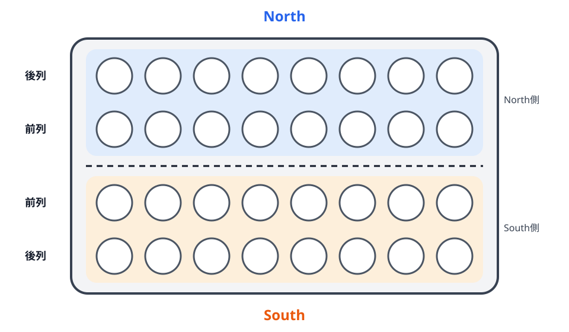
用具
- Bao盤: 4列×8穴、合計32穴
- kete: 64個
- プレイヤー: 2人
穴はスワヒリ語で、単数をshimo、複数をmashimoといいます。駒はketeと呼びます。keteは全個体を同じものとして扱い、所有者別に色分けする必要はありません。
各プレイヤーの領域
各プレイヤーは自分の前列と後列だけにketeを蒔きます。蒔きは2列の外周を回るように進みます。自分の前列の端から先へ進むと自分の後列へ移り、後列の端から前列へ戻ります。
本書の図では、下側のプレイヤーをSouth、上側をNorthとします。Southの前列をA、後列をB、Northの前列をa、後列をbと表します。穴番号は、それぞれの所有者から見て左から右へ1〜8です。North側は紙面上の見た目と番号の進み方が逆になります。そのため、真向かいの前列穴は同じ番号ではなく、A1とa8、A2とa7、……、A8とa1のように対応します。
特別な穴
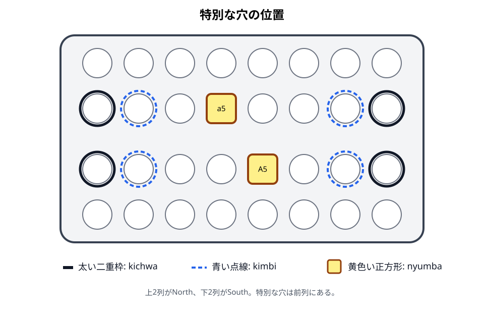
nyumba: 各プレイヤーから見て前列の左から5番目の穴です。SouthはA5、Northはa5です。kichwa: 各前列の左右端です。A1・A8・a1・a8です。kimbi: 各前列でkichwaの隣にある穴です。A2・A7・a2・a7です。
kichwaとkimbiは、捕獲したketeをどちら側から蒔き始めるかに関係します。nyumbaは、所有中だけ特別な停止・開始規則を持ちます。
注意点
- 「右」「左」は、つねに手番プレイヤー本人から見た向きで判断します。
- 前列は盤の中央側です。自分の身体に近い列は後列です。
- 盤に大きな四角い穴や貯蔵部があっても、それが自動的にnyumbaとは限りません。nyumbaは前列の所定位置です。
- 64個のketeのうち、初めは44個を盤外の手元に置きます。捕獲済みのketeを保管する場所ではありません。
地域差・確認メモ
資料によってkichwaをkitchwaと綴る例があります。本書ではkichwaに統一します。また、kichwaをkimbiの一部として広く説明する用法もありますが、本書の盤面説明では端の穴をkichwa、その隣をkimbiとして区別します。
根拠: R-002, pp. 163–164、R-003, Issue 4, p. 21。
前章: Bao la Kiswahiliとは／次章: 初期配置
日本語本文の目次へ戻る ↑初期配置
初心者向け説明
各プレイヤーは32個のketeを受け取ります。そのうち10個を自分の前列へ置き、残る22個を手元に置きます。後列はすべて空です。
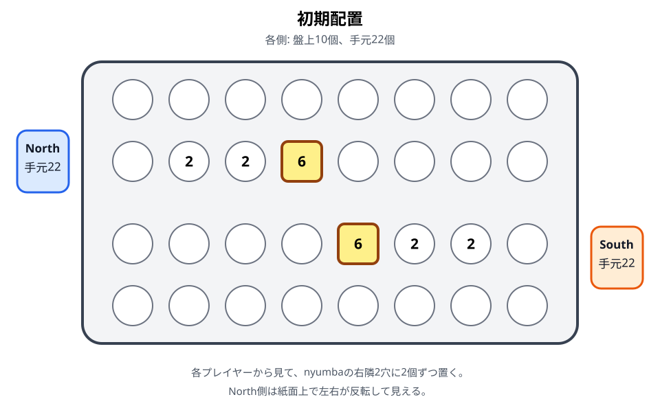
配置手順
各プレイヤーが、自分側について次の順に配置します。
- nyumbaへ6個置きます。
- nyumbaの本人から見て右隣の穴へ2個置きます。
- さらに右隣の穴へ2個置きます。
- 残る22個を手元に置きます。
- 後列8穴がすべて空であることを確認します。
本書の座標では、SouthはA5に6個、A6とA7に2個ずつ置きます。Northも本人から見た右側へ置くため、紙面上ではa5に6個、a6とa7に2個ずつとなり、Southとは左右反転して見えます。
先手と段階
R-002の形式規則ではSouthが先手です。両者は交互に手を行い、namuaでは各手の開始時に手元から1個を使います。各プレイヤーが22手ずつ行って手元のketeを使い切ると、mtajiへ移ります。ただし、その前に終局条件を満たせばゲームは終了します。
配置の確認例
片側だけを数えると、盤上は6 + 2 + 2 = 10個、手元は22個です。合計32個になります。両者を合わせると、盤上20個、手元44個、総数64個です。
注意点
- 右隣は観察者から見た右ではなく、各プレイヤー本人から見た右です。
- 2個ずつ置く穴はnyumbaに隣接する側から連続した2穴です。
- 手元の22個は共有しません。各プレイヤーが自分の分を管理します。
- Bao la kujifunzaなど、別の版の初期配置と混ぜないでください。
地域差・確認メモ
この初期配置はR-002とR-003で一致しています。先手をSouthとする記述はR-002で確認しています。実際の対局で先手の決定方法が別に定められている場合は、使用する大会・団体の規則を優先してください。
根拠: R-002, pp. 165–166、R-003, Issue 4, p. 21。
関連例: E03〜E04 初期配置
日本語本文の目次へ戻る ↑用語辞典
本文で使う専門用語の標準表記、意味、異表記をまとめます。ここでは短く確認できることを優先し、合法手の詳しい条件は各ルール章へ分けます。
この辞典の読み方
各項目の「扱い」は、次のいずれかです。
- 標準用語: 本文で原語のまま用います。
- 日本語表記: 本文では日本語を用います。括弧内の英語は確認用です。
- 説明語: 固有の専門用語として固定せず、意味を日本語で説明します。
- 資料上の表記: 参考資料には現れますが、本文の標準表記には採用しません。
根拠欄のR-001〜R-009は参考文献の番号です。R-001の全文は入手し、takasiaは原典と著者解説を照合して正式採用しました。他の細則で項目別照合が残る箇所は、そのことを明記します。
索引
| 分類 | 用語 |
|---|---|
| ゲームと版 | Bao、Bao la Kiswahili、Bao la kujifunza、mancala |
| 盤・駒・座標 | kete、shimo／mashimo、前列、後列、空穴、占有穴、North／South、A・B・a・b、手元 |
| 段階と手 | namua、mtaji、手、合法手、蒔き、方向 |
| 捕獲と継続 | 捕獲、捕獲穴、被捕獲穴、捕獲可能穴、捕獲手、takata、takasa、relay sowing、endelea |
| 特別な穴と細則 | nyumba、nyumbaの所有、nyumbaを使う、nyumbaからの2個蒔き、kichwa、kitchwa、kimbi、takasia |
| 終局 | 終局、合法手なし、投了、終わらない手 |
ゲームと版
Bao
- 読み方: バオ
- 扱い: 標準用語
- 意味: 東アフリカで行われるmancala系ゲーム、またはその複数のルール系統を指す名称です。単に「Bao」と書かれた資料が、本書と同じザンジバル版を指すとは限りません。
- 関連: Bao la Kiswahiliとは
- 根拠: R-001〜R-003。対象地域と版の区別は本書の編集上の注意です。
Bao la Kiswahili
- 読み方: バオ・ラ・キスワヒリ
- 扱い: 標準用語
- 意味: 本書が扱うBaoのルール系統です。本書では、de Voogtが1990年代前半にザンジバルの競技者から記録した系統を中心にします。
- 注意: 地理的にザンジバルで行われるすべてのBaoが同一だという意味ではありません。
- 関連: はじめに、Bao la Kiswahiliとは
- 根拠: R-001〜R-003。本書での対象範囲は基準調査によります。
Bao la kujifunza
- 読み方: バオ・ラ・クジフンザ
- 扱い: 標準用語
- 意味: Baoの蒔きと捕獲を学ぶための簡略版として、本書で別章に分けて扱う名称です。
- 注意: Phase 1の中心調査範囲外であり、規則本文は未確定です。Bao la Kiswahili本編の別名ではありません。
- 関連: Bao la kujifunza
- 根拠: 追加資料の確認待ち。
mancala
- 読み方: マンカラ
- 扱い: 説明語
- 意味: 穴と駒を使い、駒を穴へ分配するゲーム群の総称です。Bao la Kiswahiliはこのゲーム群に含まれます。
- 注意:
mancalaは単一のルールを持つ1つのゲーム名としては使いません。 - 関連: Bao la Kiswahiliとは
- 根拠: R-002, p. 163、R-003, Issue 4, p. 21。
盤・駒・座標
kete
- 読み方: ケテ
- 扱い: 標準用語
- 意味: 盤上で1個ずつ蒔く、64個の同一の駒です。
- 注意: 資料では英語で
seed、stone、counterなどとも説明されます。本書では所有者別の「石」や植物の「種」に限定せず、keteに統一します。 - 関連: 盤と用具
- 根拠: R-002, p. 163、R-003, Issue 4, p. 21。
shimo／mashimo
- 読み方: シモ／マシモ
- 扱い: 標準用語。ただし通常の本文では「穴」も使います。
- 意味: 盤の穴です。
shimoは単数形、mashimoは複数形として記録しています。 - 注意: 語形と語義はR-001およびスワヒリ語資料との再確認が残っています。
- 関連: 盤と用具
- 根拠: Phase 1用語草稿。R-001本文との照合待ち。
前列（front row）
- 扱い: 日本語表記
- 意味: 盤の中央で相手側と向かい合う、自分の8穴の列です。SouthはA列、Northはa列です。捕獲の成立に使います。
- 関連: 盤と用具、捕獲
- 根拠: R-002, pp. 163–164、R-003, Issue 4, p. 21。
後列（back row）
- 扱い: 日本語表記
- 意味: 各プレイヤーの身体に近い外側の8穴の列です。SouthはB列、Northはb列です。
- 注意: 相手の後列から直接捕獲することはありません。
- 関連: 盤と用具、捕獲
- 根拠: R-002, pp. 163–164、R-003, Issue 4, p. 21。
空穴（empty pit）
- 扱い: 日本語表記
- 意味: keteが1個も入っていない穴です。蒔きの最後の1個が空穴へ入ると、通常はそのketeだけが残り、手を終了します。
- 注意: 「最後の1個を置いた後に1個ある」ことと、「置く前から占有されていた」ことを区別します。
- 関連: relay sowing
- 根拠: R-002, pp. 164–165、R-003, Issue 4, pp. 21–22。
占有穴（non-empty pit）
- 扱い: 日本語表記
- 意味: keteが1個以上入っている穴です。蒔きの最後の1個が占有穴へ入ると、置いた後は2個以上になり、捕獲またはrelay sowingの判定を行います。
- 注意: 占有されているだけで必ず捕獲できるわけではありません。自分の前列穴と真向かいの相手前列穴がともに占有されるなど、追加条件が必要です。
- 関連: 捕獲、relay sowing
- 根拠: R-002, pp. 164–165、R-003, Issue 4, pp. 21–22。
North／South
- 扱い: 説明語
- 意味: 本書の盤面図で、上側のプレイヤーをNorth、下側をSouthと呼びます。人名や陣営名ではなく、盤面上の位置を区別するラベルです。
- 関連: 盤と用具
- 根拠: R-002, pp. 163–164。
A・B・a・b
- 扱い: 座標記号
- 意味: Southの前列を
A、後列をB、Northの前列をa、後列をbと表します。各列の穴番号は、その列を所有するプレイヤー本人から見て左から1〜8です。そのため、真向かいの前列穴はA1とa8、A2とa7、……、A8とa1のように対応します。 - 例: SouthのnyumbaはA5、Northのnyumbaはa5です。
- 関連: 盤と用具、規則確認用の局面例
- 根拠: R-002, p. 164。
手元（store／stock）
- 扱い: 日本語表記
- 意味: namuaでまだ盤へ入れていない、自分のketeを置く盤外の場所、またはそこに残るketeです。初期配置では各プレイヤー22個です。
- 注意: 捕獲したketeを保管する得点置き場ではありません。
- 関連: 初期配置、namua
- 根拠: R-002, pp. 165–166。R-003は
stockを使用。
段階と手
namua
- 読み方: ナムア
- 扱い: 標準用語
- 意味: 手元のketeを、各手の開始時に1個ずつ盤へ入れる前半段階です。
- 注意: 後列からtakataを始めないなど、namua固有の開始制約があります。
- 関連: namua
- 根拠: R-002, pp. 165–166。段階の骨格はR-003, Issue 4, pp. 21–22と一致。
mtaji
- 読み方: ムタジ
- 扱い: 標準用語
- 意味: 両者の手元が空になり、すべてのketeが盤上へ入った後半段階です。穴の中身をすべて取り上げて手を始めます。
- 注意: 1個だけの穴からは始められません。捕獲手は2〜15個から始めますが、takataには15個上限を適用しません。R-001との照合を終えた本書の採用規則です。
- 関連: mtaji
- 根拠: R-002, pp. 166–167。段階の骨格はR-003, Issue 4, p. 22と一致。
手（move）
- 扱い: 日本語表記
- 意味: 1人の手番で行う、1回以上の蒔きと捕獲の連なりです。空穴などの停止条件へ達するまで、同じプレイヤーが処理を続けます。
- 注意: relay sowingの途中で相手へ手番を渡しません。
- 関連: relay sowing
- 根拠: R-002, pp. 164–165。
合法手（legal move）
- 扱い: 日本語表記
- 意味: 現在の段階、捕獲義務、開始穴、方向、特別な停止規則をすべて満たす手です。
- 注意: 単にketeを物理的に蒔ける手という意味ではありません。捕獲手があるときのtakataは合法手ではありません。
- 関連: namua、mtaji
- 根拠: R-002, pp. 164–167。本書で条件をまとめるための日本語表記です。
蒔き（sowing／spreading）
- 扱い: 日本語表記
- 意味: 決められた個数のketeを、自分の連続する穴へ1個ずつ置く操作です。
- 注意: 1手には複数回の蒔きが含まれることがあります。相手側の列へ直接蒔きません。
- 関連: 盤と用具、relay sowing
- 根拠: R-002, p. 164、R-003, Issue 4, pp. 21–22。
方向（clockwise／anti-clockwise）
- 扱い: 日本語表記
- 意味: 自分の2列の外周に沿って蒔く向きです。左のkichwaから始める捕獲後の蒔きは時計回り、右のkichwaから始める蒔きは反時計回りです。
- 注意: 左右は手番プレイヤー本人から見て判断します。通常、1回の手の途中で自由に方向を変えません。
- 関連: 捕獲
- 根拠: R-002, pp. 164–165、R-003, Issue 4, pp. 21–22。
捕獲と継続
捕獲（capture）
- 扱い: 日本語表記
- 意味: 自分の占有された前列穴へ蒔き終わり、その真向かいの相手前列穴も占有されているとき、相手穴の全keteを取って自分側で直ちに蒔く処理です。
- 注意: 捕獲したketeを盤外へ除いたり、得点として保管したりしません。捕獲可能なら捕獲は義務です。
- 関連: 捕獲
- 根拠: R-002, pp. 164–167、R-003, Issue 4, pp. 21–22。
捕獲穴（capturing pit）
- 扱い: 日本語表記
- 意味: 捕獲成立時に、最後のketeが入った自分の前列穴です。namuaの開始捕獲では、手元の1個を入れる自分の占有穴を指します。
- 関連: 捕獲
- 根拠: R-002, pp. 164, 166。
被捕獲穴（captured pit）
- 扱い: 日本語表記
- 意味: 捕獲穴の真向かいにある、全keteを取られる相手の前列穴です。
- 関連: 捕獲
- 根拠: R-002, p. 164。
捕獲可能穴（marker）
- 扱い: 説明語
- 意味: 向かいの相手前列穴も占有され、捕獲の候補となる自分の前列穴です。
- 表記:
markerは英語圏の補助資料に見られる説明語です。本書では原語の専門用語にせず、「捕獲可能穴」と書きます。 - 関連: namua、規則確認用の局面例 E05
- 根拠: 概念はR-002, pp. 164–167。
markerの用例はR-005。
捕獲手（capture move）
- 扱い: 日本語表記
- 意味: 捕獲から始まる手です。最初の捕獲後も、relay sowingの終点で条件を満たせば追加の捕獲が起こります。
- 対義的な表現: takata。
- 関連: namua、mtaji、捕獲
- 根拠: R-002, pp. 165–167。
takata
- 読み方: タカタ
- 扱い: 標準用語
- 意味: 捕獲から始まらず、その手の途中でも捕獲を行わない手です。捕獲手が存在しない場合に行います。
- 注意: 「最初だけ捕獲しない手」ではありません。途中で向かい合う占有穴ができても、相手のketeを取りません。
- 異表記: R-002・R-003では
takasa。 - 語形: R-008では動詞形
kutakataを用います。本書の標準表記はtakataのままです。 - 関連: namua、mtaji
- 根拠: 概念はR-002, pp. 165–167、R-003, Issue 5, pp. 22–23。標準表記の選択はR-005を含むPhase 1の整理によります。
takasa
- 読み方: タカサ
- 扱い: 資料上の表記
- 意味: R-002・R-003が、捕獲から始まらず、その手では捕獲しない手に用いる語です。
- 本文での扱い: 通常は
takataと書き、資料差を説明するときだけtakasaを併記します。 - 注意:
takasiaとは別の規則です。 - 根拠: R-002, pp. 165–167、R-003, Issue 5, pp. 22–23。
relay sowing
- 扱い: 標準用語
- 意味: 蒔きの最後のketeが占有穴へ入り、捕獲や停止が起きないとき、その穴の全keteを取り上げ、同じ手の中で蒔きを続ける仕組みです。
- 注意: 通常は同じ方向を維持します。空穴、所有中のnyumba、takasiaなどで停止する場合があります。
- 関連: relay sowing
- 根拠: R-002, p. 165、R-003, Issue 4, pp. 21–22。
endelea
- 読み方: エンデレア
- 扱い: 資料上の表記
- 意味: R-002が、占有穴から同じ方向へ蒔きを継続する処理に用いる語です。
- 本文での扱い: 一般的な仕組みの名称には
relay sowingを用い、R-002の用語を説明するときにendeleaを併記します。 - 語形: R-008では
kuendeleaを用います。 - 関連: relay sowing
- 根拠: R-002, p. 165。
特別な穴と細則
nyumba
- 読み方: ニュンバ
- 扱い: 標準用語
- 意味: 各プレイヤーの前列に1つある特別な穴です。本人から見て左から5番目、SouthはA5、Northはa5です。
- 注意:
nyumbaは穴の位置を指すと同時に、特別な機能を所有している状態とも関係します。 - 関連: nyumba
- 根拠: R-002, pp. 163–167、R-003, Issue 4–5。
nyumbaの所有（owned house）
- 扱い: 説明語
- 意味: nyumbaが特別な停止・開始規則をまだ持つ状態です。両者は所有中の状態で対局を始めます。
- 喪失: R-002では、nyumbaを空にした場合、またはmtajiで最初の捕獲が起きた場合に所有状態を失います。
- 機能条件: R-008では、6個未満の間は6個以上を条件とする特別規則が働かず、再び6個以上になれば適用されます。これは所有状態そのものの喪失とは区別されます。
- 資料差: R-003 Issue 5の機能するnyumbaの定義と、R-001・R-002・R-006・R-008のmtajiへの所有の持ち越しを分けて読みます。同記事にも5個時の追加説明と地域差があります。
- 注意: 穴としてのnyumbaは、所有状態を失っても同じ位置に残ります。
- 関連: nyumba
- 根拠: R-001, p. 42、R-002, pp. 166–167、R-003, Issue 5, pp. 22–23、R-006, p. 25、R-008, §§3.2, 4.2.1。所有の持ち越しは原典照合済み。5個からの開始境界と現行運用は未確認。
nyumbaを使う（play the house）
- 扱い: 説明語
- 意味: namuaの捕獲手のrelay sowingが所有中のnyumbaへ達し、到達後に6個以上あり、そこで捕獲が起きないとき、停止せずnyumbaの全keteを取り上げて蒔きを続ける選択です。
- 結果: nyumbaを空にするため、所有状態を失います。
- 関連: nyumba
- 根拠: R-001, pp. 38–39、R-008, §4.2.1.2。R-002, pp. 165–167、R-003, Issue 5, pp. 22–23も参照。6個条件の記述差は第09章で説明。
nyumbaからの2個蒔き（taxation）
- 扱い: 説明語
- 意味: namuaで捕獲できず、前列で6個以上ある所有中のnyumbaだけが占有されている場合に、手元から1個を入れた後、nyumbaから2個だけを取り出して蒔く開始方法です。すでに5個の場合の開始処理の境界は未確認です。
- 表記:
taxationは英語圏の補助資料に見られるラベルです。本書では専門用語として採用しません。 - 関連: nyumba、規則確認用の局面例 E14
- 根拠: 処理はR-002, p. 166、R-003, Issue 5, pp. 22–23。
taxationの用例はR-005。
kichwa
- 読み方: キチュワ
- 扱い: 標準用語
- 意味: 各前列の左右端の穴です。SouthはA1・A8、Northはa1・a8です。捕獲したketeは、左右いずれかのkichwaから蒔き始めます。
- 異綴り: R-002には
kitchwaも現れます。 - 関連: 盤と用具、捕獲
- 根拠: R-002, pp. 163–165、R-003, Issue 4, pp. 21–22。
kitchwa
- 扱い: 資料上の表記
- 意味: R-002に現れる
kichwaの異綴りです。 - 本文での扱い: 引用や資料差の説明を除き、
kichwaへ統一します。 - 根拠: R-002, pp. 163–165。
kimbi
- 読み方: キンビ
- 扱い: 標準用語
- 意味: 各前列でkichwaの隣にある穴です。SouthはA2・A7、Northはa2・a7です。kimbiで捕獲すると、同じ側のkichwaから捕獲したketeを蒔きます。
- 注意: kichwaをkimbiに含めて説明する用法もあります。本書の盤面図では端の穴をkichwa、その隣をkimbiとして区別します。
- 関連: 盤と用具、捕獲
- 根拠: R-002, pp. 163–165、R-003, Issue 4, pp. 21–22。
takasia
- 読み方: タカシア
- 扱い: 標準用語。2026-10-08に原典と著者解説を照合して正式採用
- 意味: mtajiのtakataで一定条件を満たしたとき、次の相手が特定の穴を空にできなくなる制約です。relay sowingがその穴で終わると、全keteを取り上げずに手を止めます。
- 注意: 1個だけの穴、所有中のnyumba、前列で唯一占有された穴、前列で唯一2個以上ある穴には適用できません。所有を失ったnyumbaの位置は通常穴です。最後の1個が対象穴へ入ると停止しますが、途中の通過では停止しません。制約は相手の次の1手だけです。
- 語形: R-008では
kutakatiaを用います。R-002のtakasiaと同系統の規則として照合できますが、語形の最終判断は現地資料による確認待ちです。 - 関連: mtaji、規則確認用の局面例 E30
- 根拠: R-001, pp. 41–43、R-006, p. 25、R-002, p. 167。完全局面はR-009, §4.5。
終局
終局（end of the game）
- 扱い: 日本語表記
- 意味: 一方の前列がすべて空になるか、手番プレイヤーに合法手がなくなり、対局が終了することです。
- 注意: 前列が空になる条件は、手の途中でも判定します。
- 関連: 終局と勝敗
- 根拠: R-002, p. 164。前列空の勝利条件はR-003, Issue 4, p. 21とも一致。
合法手なし（cannot move）
- 扱い: 説明語
- 意味: 規則を満たす開始穴と手順が1つもない状態です。R-002では、その手番プレイヤーが敗北します。
- 例: mtajiで自分の16穴がすべて0個または1個なら、2個以上の開始穴がありません。
- 注意: 「捕獲手がない」こととは異なります。takataが可能ならゲームは続きます。
- 関連: 終局と勝敗
- 根拠: R-001, pp. 40–41、R-002, pp. 164, 167。mtajiの0個・1個のみの場合は原典と照合済み。
投了（resignation）
- 扱い: 日本語表記
- 意味: プレイヤーが敗北を認め、対局を終了することです。
- 注意: 宣言方法や大会上の手続は、現在の基準資料では確定していません。
- 関連: 終局と勝敗
- 根拠: R-002, p. 168の棋譜例。
終わらない手（infinite move）
- 扱い: 説明語
- 意味: relay sowingが循環し、有限回で終了しない手です。
- 注意: R-002には計算機用の判定規則があります。R-008は対局前に判定基準を定めるクラブ運用を示しますが、ザンジバルの現地競技規則としては未確認です。
- 関連: relay sowing、終局と勝敗
- 根拠: R-004、R-008, §1.5.6。R-002, p. 165の規定は計算機専用です。
表記早見表
| 資料・英語の表記 | 本文の標準表記 |
|---|---|
| capture | 捕獲 |
| sowing／spreading | 蒔き |
| pit／hole | 穴。必要に応じてshimo／mashimo |
| counter／seed／stone | kete |
| store／stock | 手元 |
| takasa | takata |
| kitchwa | kichwa |
| marker | 捕獲可能穴 |
| taxation | nyumbaからの2個蒔き |
| house／owned house | nyumba／所有中のnyumba |
| play the house | nyumbaを使う |
| endelea | R-002の用語として併記。一般説明はrelay sowing |
未確認事項
shimo／mashimo、takata／takasa／takasiaの語形は、スワヒリ語資料または現地話者による確認が残っています。- 読み方は日本語で参照しやすくするための目安です。音韻・アクセントを示すものではありません。
- 語源や直訳は、確認できる資料がないため記載していません。
- Bao la kujifunzaの用語と規則は追加資料の確認後に補います。
用語判断の履歴: Phase 1用語草稿
日本語本文の目次へ戻る ↑namua
初心者向け説明
namuaは、各プレイヤーが手元に22個のketeを持って始める前半段階です。自分の手番では、まず手元から1個を自分の前列へ入れます。ただし、どの穴へ入れてもよいわけではありません。最初に捕獲できるかを調べ、できるなら必ず捕獲します。
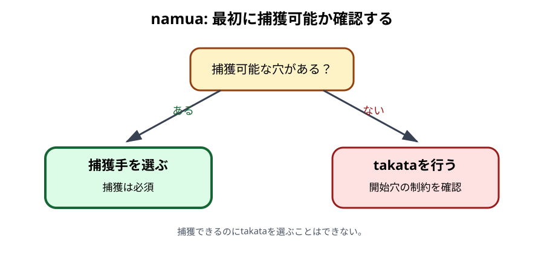
合法手を選ぶ順序
手番では次の順に確認します。
- 自分の前列で、keteが1個以上ある穴を探します。
- その真向かいにある相手の前列穴にもketeがあれば、その組は捕獲候補です。
- 捕獲候補が1つでもあれば、そのうち1つから捕獲手を行います。
- 捕獲候補がなければ、takataを行います。
捕獲手
- 手元から1個を捕獲に使う自分の前列穴へ入れます。
- 真向かいの相手穴にあるketeをすべて取ります。
- 取ったketeを、自分の左または右のkichwaから蒔きます。
- 蒔き終わりに応じて、捕獲またはrelay sowingを続けます。
捕獲穴がkichwaまたはkimbiなら、同じ側のkichwaから蒔き始めます。それ以外の穴なら、namuaの最初の捕獲では左右どちらのkichwaから始めるかを選べます。詳しくは捕獲を参照してください。
捕獲できないときのtakata
takataでは、手元から1個を、自分の前列にある占有穴へ入れます。その穴のketeをまとめて取り、左または右へ蒔きます。この手の途中では、捕獲できる形で蒔き終えても捕獲しません。方向を変えずにrelay sowingを続けます。
開始穴には次の制約があります。
- 後列からは始められません。
- 原則として、1個だけの穴からは始められません。
- ただし、前列に2個以上の穴がない場合、またはnyumbaをまだ所有している場合は、1個だけの穴から始められます。
- 6個以上ある所有中のnyumbaからは、原則として始められません。
- 前列で6個以上ある所有中のnyumbaだけが占有されている場合は、nyumbaの例外を使います。
nyumbaだけが前列に残った場合
6個以上ある所有中のnyumbaだけが自分の前列に残っているときは、手元の1個をnyumbaへ入れた後、nyumbaから2個だけを取り出して左右どちらかへ蒔きます。全内容を取るのではありません。すでに5個の場合の開始処理の境界は、外部レビューで確認する事項です。詳しくはnyumbaを参照してください。
具体例
自分の前列A4に2個、真向かいのa5に3個あるとします。A4は捕獲可能穴です。
- 手元から1個をA4へ入れ、A4を3個にします。
- a5の3個をすべて取ります。
- A4はkichwaでもkimbiでもないため、左右どちらのkichwaから蒔くか選びます。
- 選んだkichwaから3個を1個ずつ蒔き、その終点を判定します。
ほかにtakataをしたい穴があっても、この局面では捕獲が義務です。
namuaの終了
自分の手元が空になっても、相手に手元のketeが残っていれば、その相手はnamuaの手を続けます。両者の手元がすべて空になった時点でmtajiへ移ります。R-002の初期配置では、終局しなければ各プレイヤー22手、合計44手番で移行します。
注意点
- 手元の1個を空穴へ直接置いて手を始めることはできません。
- 捕獲可能かどうかは、自分と相手の前列だけで判定します。
- takataは「最初だけ非捕獲」ではありません。その手の全体が非捕獲です。
- 左右のkichwaを選べるのは、namuaの最初の捕獲穴がkichwa・kimbi以外の場合です。手の途中では既存の方向を維持します。
- 前列にkichwaだけが残る場合、そのkichwaから後列へ向かう方向を選ぶと前列が空になり敗北するため、その方向は選べません。
地域差・確認メモ
R-002とR-003は非捕獲手をtakasaと呼びます。本書ではtakataに統一します。1個だけの穴とnyumbaに関する制約はR-003 Issue 5でIssue 4の説明が補足・訂正されているため、Issue 5を優先しました。
根拠: R-001, pp. 38–40, 42、R-002, pp. 165–167、R-003, Issue 4, pp. 21–22およびIssue 5, pp. 22–23。2個蒔きの6個条件はR-008, §2.3.2も参照。
関連例: E05〜E14 namua
日本語本文の目次へ戻る ↑mtaji
初心者向け説明
mtajiは、両者の手元にketeがなくなり、64個すべてが盤上へ入った後半段階です。namuaのように手元から1個を加えません。自分の穴を1つ選び、その中のketeをすべて取って蒔き始めます。
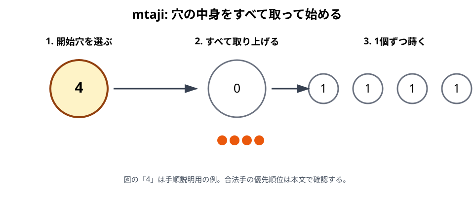
合法手を選ぶ順序
- 2個以上のketeがある自分の穴から、最初の蒔きで捕獲できる手を探します。
- 捕獲手が1つでもあれば、必ずそのうち1つを選びます。
- 捕獲手がなければ、takataを行います。
- takataは、可能なら前列の穴から始めます。前列から合法に始められない場合に後列を使います。
空穴や1個だけの穴から手を始めることはできません。自分の16穴がすべて0個または1個なら、合法手がなく敗北します。
捕獲手
捕獲手は、次の条件をすべて満たす開始穴と方向から選びます。
- 自分の前列または後列にある穴である。
- その穴に2個以上15個以下のketeがある。
- 全keteを選んだ方向へ蒔くと、最後の1個が自分の占有された前列穴へ入る。
- その真向かいの相手前列穴にもketeがある。
最後の条件を満たしたら、相手穴の全keteを取り、自分のkichwaから蒔きます。蒔き始める側は、それまでの方向と、捕獲穴がkichwa・kimbiかどうかで決まります。
捕獲できないときのtakata
捕獲手がない場合は、2個以上ある穴の中身をすべて取り、選んだ方向へ蒔きます。可能なら前列から開始しなければなりません。takataの途中では捕獲を行わず、停止条件に達するまで同じ方向へrelay sowingを続けます。
前列で占有されている穴がkichwaだけの場合、そのkichwaを空にして前列が空になる方向は選べません。
16個以上ある穴
R-001, p. 38とR-002は、捕獲手の開始穴を2〜15個に限定しています。16個以上の穴は「最初の蒔きで捕獲する手」の開始穴にはなりません。一方、捕獲手がなくtakataを行う場合は、前列優先などの条件を満たせば16個以上の穴からも始められます。R-001, p. 41の非捕獲手には、捕獲手の15個上限を適用しません。
2026-10-08に原典を照合しました。16個を蒔く左右両方向の全手順は、64個の構成局面 V01で確認できます。
takasia
takasiaは、mtajiで相手の次のtakataに制約を与える規則です。本書では2026-10-08に、R-001の原典とR-006の著者解説を照合して正式採用しました。
自分のtakataを終えた盤面で、次の2条件を確認します。
- 相手に捕獲手がなく、次の手がtakataになる。
- 同じ盤面で自分がもう一度手を指すと仮定すると、最初の蒔きで捕獲できる相手前列穴がちょうど1つである。
数えるのは「捕獲手の数」ではなく「捕獲対象の穴の数」です。開始穴や方向が異なる複数の手でも、対象が同じ穴だけなら2番目の条件を満たします。相手の応手後の盤面を先読みして成立を判定するのではありません。
ただし、次の穴にはtakasiaを適用できません。
- keteが1個だけの穴
- 相手の前列で唯一占有されている穴
- 相手の前列で唯一2個以上ある穴
- 所有状態が残っているnyumba（所有を失った同じ位置の穴は通常穴として判定する）
例外に当たらなければ、その穴を相手の次の1手の間だけtakasiaの対象にします。相手はそこから蒔き始めたり、relay sowingで中身を取り上げたりできません。蒔きの最後の1個が対象穴へ入ったら、そこで必ず手を止めます。途中で通過するだけなら、通常どおり1個を加えて蒔き続けます。
相手が自分のnyumbaから蒔き始めた場合も、最後の1個が対象穴へ入れば停止します。この開始方法による例外は採用しません。対象穴が永久に使用不能になるわけではありません。
成立判定、直前のtakata、相手の全4応手は完全局面 E30で確認できます。
具体例
自分の穴に4個あり、選んだ方向へ4個蒔いた最後の1個が、自分の前列の占有穴へ入るとします。真向かいの相手前列にもketeがあれば、これは捕獲手の候補です。同じ局面に捕獲できない前列の穴があっても、そちらからtakataを始めることはできません。
注意点
- mtajiでは手元からketeを追加しません。
- 「2個以上ある穴ならどれでもよい」ではなく、捕獲手を先に全体から探します。
- 捕獲手は前列だけでなく、後列から始めた蒔きでも成立し得ます。
- 捕獲手の開始条件「2〜15個」を、takataの開始条件へ転用しません。
- takasiaは相手の次のtakataへの制約です。蒔きの途中の通過と、最後の1個の到達を区別します。
地域差・確認メモ
takasiaの「1個だけの穴は対象にしない」という例外は、R-006, p. 25の著者解説で明記されています。R-001とR-002の例外一覧には同じ明示がないため、後年の補足として採用します。R-001, pp. 42–43にはnyumbaから始めた蒔きなら対象穴で継続できるという異説も記録されていますが、同書の競技者による否定と、R-006・R-002の停止規則に従い、本書では継続を認めません。資料差と採用理由は採用記録に残します。現在のすべての地域・大会で共通するとの主張ではありません。
16個以上の開始穴、前列優先、両列が0個・1個だけの場合の敗北は、R-001, pp. 38, 40–41と照合済みです。現在の大会すべてに共通するとの主張ではありません。
根拠: R-001, pp. 38–41、R-002, pp. 167–168。mtajiの骨格はR-003, Issue 4, p. 22でも確認。
takasiaの根拠: R-001, pp. 41–43、R-006, p. 25、R-002, p. 167, §4.1(a–c)。完全局面はR-009, §4.5。
関連例: E15〜E22 mtaji
日本語本文の目次へ戻る ↑捕獲
初心者向け説明
Bao la Kiswahiliの捕獲は、相手のketeを盤外へ除く操作ではありません。相手の前列穴を空にし、そこにあった全keteを自分側へ移して、直ちに蒔きます。
捕獲できる手があれば、捕獲は義務です。ただし、捕獲から始まらないtakataの途中では捕獲しません。
捕獲が成立する基本条件
蒔きの最後の1個が自分の前列の占有穴へ入り、その真向かいにある相手の前列穴も占有されていれば捕獲が成立します。「占有穴」は、蒔く前からketeがあり、最後の1個を置いた後に2個以上になる穴です。
namuaの手の開始時だけは、手元の1個を自分の占有された前列穴へ直接入れることで、この条件を作ります。mtajiでは開始穴の全keteを蒔いた終点で判定します。
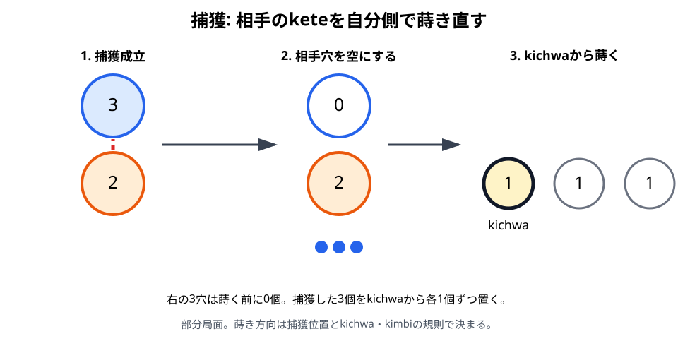
捕獲の手順
- 捕獲穴の真向かいにある相手の前列穴を確認します。
- その相手穴からketeをすべて取ります。
- 左右どちらから蒔くかを、下記の方向規則で決めます。
- 決まった側のkichwaへ最初の1個を置きます。
- 残りを自分の2列へ1個ずつ蒔きます。
- 蒔き終わりの穴を判定し、捕獲、relay sowing、または手の終了へ進みます。
kichwa・kimbiと方向
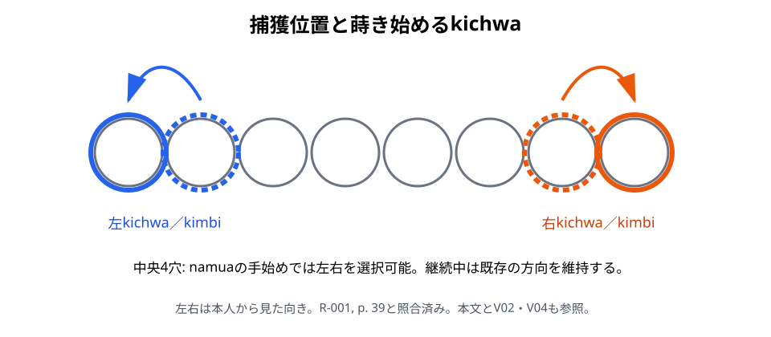
- 捕獲穴が左のkichwaまたは左のkimbiなら、左のkichwaから蒔き始めます。
- 捕獲穴が右のkichwaまたは右のkimbiなら、右のkichwaから蒔き始めます。
- namuaの最初の捕獲で、捕獲穴がkichwa・kimbi以外なら、左右を選べます。
- それ以外の捕獲では、手の中ですでに進んでいた方向を維持します。
左のkichwaから始める蒔きは時計回り、右のkichwaから始める蒔きは反時計回りです。ここでいう左右は、手番プレイヤー本人から見た向きです。
連続捕獲
捕獲したketeを蒔き終えた先でも捕獲条件を満たせば、同じ手の中で再び相手穴を捕獲します。捕獲穴がkichwaまたはkimbiなら、その側のkichwaから蒔き直すため、手の進行方向が変わることがあります。それ以外の穴での捕獲は、既存の方向を維持します。
具体例
namuaで、中央寄りの前列穴に自分と相手のketeが向かい合っているとします。
- 手元から1個を自分の穴へ入れます。
- 相手穴の全keteを取ります。
- 捕獲穴がkichwa・kimbi以外なら、左右どちらのkichwaから始めるか選びます。
- 捕獲したketeを蒔きます。
- 終点が別の捕獲可能穴なら、続けて捕獲します。
注意点
- 相手の後列からは捕獲しません。
- 真向かいの相手前列穴が空なら捕獲できません。
- 自分の終点が空穴なら、keteを置いた後に1個だけなので捕獲できません。
- 捕獲したketeを手元へ戻したり、得点として盤外へ保管したりしません。
- takataの途中では、盤面が捕獲可能な形になっても捕獲しません。
地域差・確認メモ
捕獲義務と方向規則は、R-001, pp. 38–39、R-002、R-003を照合済みです。図7-2の左右は、手番プレイヤー本人から見た左右です。実戦冒頭 V02でNorth側の座標と蒔き始めを、構成局面 V04でkimbiの方向変更を確認できます。
根拠: R-001, pp. 38–39、R-002, pp. 164–167、R-003, Issue 4, pp. 21–22。
関連例: E23〜E25 捕獲方向
前章: mtaji／次章: relay sowing
日本語本文の目次へ戻る ↑relay sowing
初心者向け説明
1回蒔いて終わりとは限らないことが、Bao la Kiswahiliの大きな特徴です。最後のketeが、すでにketeのある穴へ入った場合、その穴の全keteを取り上げて蒔きを続けます。本書ではこの仕組みをrelay sowingと呼びます。R-002では継続をendeleaと呼びます。
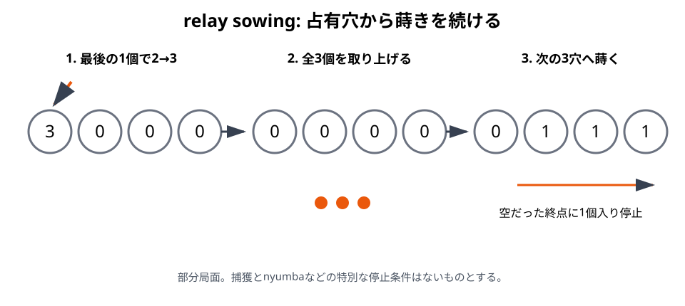
基本手順
- 所定のketeを、選んだ方向へ1個ずつ蒔きます。
- 最後の1個を置いた穴を確認します。
- その穴が空だったなら、通常は手を終了します。
- その穴に元からketeがあり、捕獲が起きないなら、穴の全keteを取ります。
- 同じ方向の次の穴から、1個ずつ蒔き続けます。
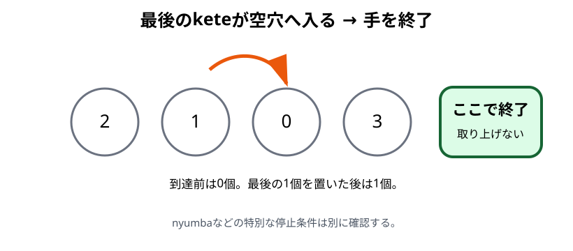
「占有穴へ終わる」とは、最後の1個を置いた後に2個以上になったことを指します。空穴へ最後の1個を置いた場合は、置いた後に1個だけなので継続しません。
捕獲との関係
捕獲手の途中で、最後のketeが自分の占有された前列穴へ入り、真向かいの相手前列穴にもketeがあれば、relay sowingより先に捕獲します。捕獲したketeをkichwaから蒔き、その終点を改めて判定します。
takataは手全体が非捕獲です。takataの途中で同じ盤面条件が生じても捕獲せず、通常のrelay sowingとして続けます。
方向
通常のrelay sowingでは、手を始めたときの方向を維持します。毎回方向を選び直すことはできません。捕獲穴がkichwaまたはkimbiだった場合は、捕獲したketeを同じ側のkichwaから蒔くため、結果として方向が変わることがあります。
停止条件
手は次の場合に止まります。
- 最後のketeが空穴へ入った。
- 所有中のnyumbaへ到達し、nyumbaの規則によって止まった。
- mtajiで、相手のtakasiaによる制約があるtakataの最後の1個が対象穴へ入った。
- 手の途中で相手の前列が空になり、ゲームそのものが終了した。
捕獲条件を満たした場合は手を止めず、捕獲処理へ移ります。
具体例
3個を蒔き、最後の1個が元から2個ある穴へ入ったとします。その穴は3個になります。捕獲条件や特別な停止条件がなければ、3個すべてを取り、同じ方向の次の穴から蒔きます。次の蒔きが空穴で終われば、そこで手が終わります。
注意点
- 最後の穴に置いたketeだけでなく、その穴の全keteを取り上げます。
- 取り上げた穴の次の穴から蒔きます。同じ穴へ最初の1個を戻しません。
- 空穴、所有中のnyumba、takasiaでは通常則と異なる停止が起こります。
- takasiaの対象穴を蒔きの途中で通過するだけなら停止しません。nyumbaから始めた蒔きでも、最後の1個が対象穴へ入れば停止します。制約は次の相手の1手だけです（R-001, p. 42、R-006, p. 25）。成立条件と例外、完全局面 E30も参照してください。
- 長い手でも、途中で相手へ手番を渡しません。
地域差・確認メモ
R-002には、所定数を超えてketeを蒔く手を「終わらない手」とみなして不合法にする計算機専用規則があります。本書はこれを対人競技の正式ルールとして採用しません。終わらない連続蒔き自体はR-004の研究対象ですが、対人対局での処理は未確認です。
根拠: R-002, pp. 164–165、R-003, Issue 4, pp. 21–22。終わらない手はR-004。
日本語本文の目次へ戻る ↑nyumba
初心者向け説明
nyumbaは、各プレイヤーの前列に1つずつある特別な穴です。初期配置で6個のketeを入れ、「所有している」状態から始めます。所有中だけ、通常のrelay sowingとは異なる停止や開始を選べます。
nyumbaは場所の名前であると同時に、特別な機能を持つ状態でもあります。特別な機能を失った後も穴そのものは残りますが、通常の前列穴として扱います。
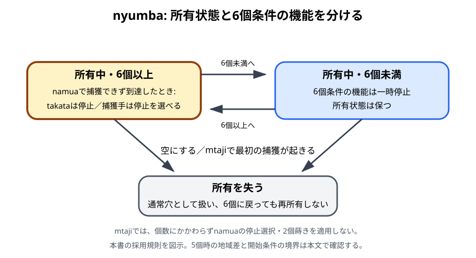
位置と初期状態
nyumbaは、各プレイヤー本人から見て前列の左から5番目にあります。SouthはA5、Northはa5です。初期配置では6個入り、両者がそれぞれ自分のnyumbaを所有します。
namuaでnyumbaへ到達したとき
所有中のnyumbaへ蒔き終わった場合は、手の種類によって扱いが変わります。
takataの場合
nyumbaが6個以上になったなら、そこで手を止めます。全keteを取り上げてrelay sowingを続けません。
捕獲手の場合
nyumbaの真向かいから捕獲できるなら、通常どおり捕獲します。捕獲できず、最後の1個を置いた後にnyumbaが6個以上ある場合は、そこで止めるか、nyumbaを「使う」かを選べます。6個未満なら、この停止選択はなく、通常のrelay sowingに従います。
nyumbaを使う場合は、中の全keteを取り上げ、同じ手の方向へ蒔き続けます。nyumbaを空にした時点で所有状態を失います。
nyumbaからの2個蒔き
namuaで捕獲できず、自分の前列で6個以上ある所有中のnyumbaだけが占有されている場合に使う開始方法です。
- 手元から1個をnyumbaへ入れます。
- nyumbaから2個だけを取り出します。
- 左右どちらかを選び、1個ずつ蒔きます。
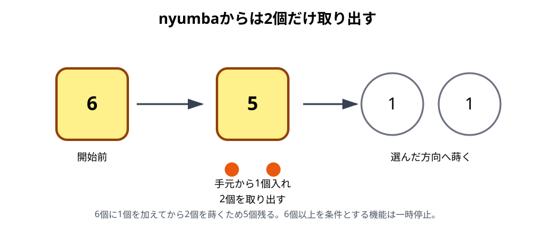
この操作ではnyumbaを空にしません。7個から2個を蒔くと5個残るため、6個以上を条件とする特別な停止規則は働かなくなります。本書では所有状態を保ち、再び6個以上になれば条件付きの機能が戻る扱いを採用します。5個時の地域差は下の「資料差・確認メモ」で説明します。英語資料でtaxationと呼ばれることがありますが、本書では「nyumbaからの2個蒔き」と説明します。
この開始方法の確実な例は、開始前に6個以上あるnyumbaだけが前列に残る場合です。すでに5個で、手元の1個を追加して6個になる場合の開始処理には解釈の余地があるため、外部レビューで確認する事項とします。この境界を2個蒔きの確定例として使いません。
所有状態を失う条件
R-002の形式規則とR-008では、次の場合にnyumbaの所有状態を失います。
- nyumbaの中身をすべて取り、空にした。
- mtajiに入った後、最初の捕獲が起きた。
mtaji開始時にまだ所有していれば、最初の捕獲までは所有状態が残ります。この持ち越しはR-001, p. 42とR-006, p. 25でも確認でき、所有中のnyumbaはtakasiaの対象になりません。所有を失った後は、その位置の穴も通常穴としてtakasiaを判定します。ただし、namuaにおけるnyumbaからの2個蒔きや、nyumbaで止まる選択はmtajiでは適用しません。
nyumbaから蒔き始めたことによるtakasiaの停止免除は認めません。蒔きの最後の1個が別のtakasia対象穴へ入った場合は停止します。mtajiの採用規則を参照してください。
相手にnyumbaの真向かいから捕獲されて空になった場合も、「空になった」ため特別な機能を失います。
具体例
捕獲手のrelay sowingが、所有中で6個以上ある自分のnyumbaへ到達し、真向かいの相手穴が空だったとします。この場合は次の2択です。
- nyumbaで手を止め、所有状態を保つ。
- nyumbaの全keteを取り上げて同じ方向へ蒔き、所有状態を失う。
同じ到達でもtakataなら、6個以上の所有中nyumbaで停止し、続行を選びません。
注意点
- 盤上のnyumbaは、所有状態を失っても位置が変わりません。
- 所有中のnyumbaへ、いつでも手元の1個を入れられるわけではありません。
- 2個蒔きは全内容を蒔く操作ではなく、namuaの限定された開始規則です。
- 捕獲手でnyumbaに到達しても、真向かいに相手のketeがあれば停止を選ばず捕獲します。
- mtajiではnamuaのnyumba例外をそのまま使いません。
資料差・確認メモ
本書は、nyumbaの「所有状態」と、6個以上のときに働く機能を分けます。停止の6個条件は、最後の1個を加えた後に判定します。R-001, pp. 38–39の機能するhouseの定義と停止選択、およびR-008, §4.2.1.2の明示条件を根拠に、捕獲手の停止選択にも6個条件を適用します。R-002, §1.6(a)は6個以上を示しますが、§2.5(b)の停止選択文には個数条件を繰り返していません。この記述差も残します。比較局面 V03で採用する扱いを確認できます。
R-001, p. 42は、空にしていないhouseが5個でも残り、6個へ戻る場合を説明します。同頁は、Dar es Salaamでは他に1個穴があっても5個のhouseをtakataする地域差も記録しています。R-003 Issue 5, p. 23も、冒頭の機能するhouseの定義に加え、5個でも次のtakataまではhouseとみなす場合と、5個で直ちにhouseではなくなる地域差を説明します。同記事が5個で一律に所有を失うとだけ説明しているわけではありません。
mtajiへの持ち越しは、R-001, p. 42、R-006, p. 25、R-002・R-008の扱いを採用します。R-003の「mtajiにはhouseがない」という簡略な説明とは、所有と機能を分けて比較します。5個から始める手の追加前後の条件判定や、現在の地域・大会での運用は外部レビューで確認します。
根拠: R-002, pp. 165–167、R-003, Issue 4, pp. 21–22およびIssue 5, pp. 22–23、R-008, §§3.2, 4.2.1–4.2.3。
takasiaと所有状態の持ち越し: R-001, pp. 42–43、R-006, p. 25。
関連例: E29 nyumba
前章: relay sowing／次章: 終局と勝敗
日本語本文の目次へ戻る ↑終局と勝敗
初心者向け説明
Bao la Kiswahiliでは、相手の前列8穴をすべて空にすると勝ちです。また、相手が合法手を行えない場合も勝ちます。keteの総数を比べて勝敗を決めるゲームではありません。
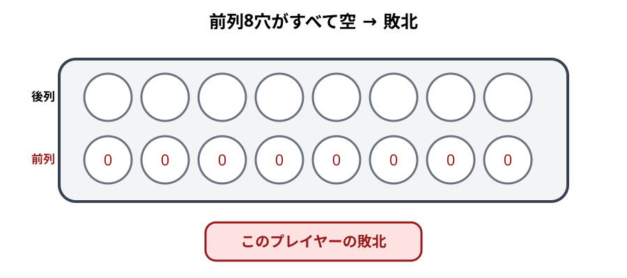
終局条件
R-002の形式規則では、次のどちらかが起きるとゲームを終了します。
- 一方のプレイヤーの前列がすべて空になった。
- 手番プレイヤーに合法手がない。
どちらの場合も、条件を満たした側が敗者、相手が勝者です。
手の途中で前列が空になった場合
前列が空になる条件は、手の終了時だけでなく手の途中でも判定します。捕獲によって相手の前列最後のketeを取り去ったなら、その時点でゲームが終了します。捕獲したketeを最後まで蒔いてから判定するのではありません。
また、自分の前列最後の占有穴から蒔き始めて一時的に前列を空にする方向は、敗北につながります。R-002は、前列にkichwaだけが残る場合、前列を空にして後列へ向かうtakataを禁止しています。
合法手がない場合
mtajiでは、空穴と1個だけの穴から手を始められません。自分の前列・後列の全16穴が0個または1個なら合法手がなく、敗北します。
namuaでは手元から1個を使いますが、前列の状態と開始制約に従う必要があります。R-002は一般条件として「動けないプレイヤーの敗北」を定めています。
具体例
相手前列にketeがある穴が1つだけ残っているとします。自分がその真向かいで捕獲し、相手穴の全keteを取ると、相手前列は空になります。relay sowingが続く形でも、その時点で終局です。
別の例として、mtajiで自分の16穴すべてに0個または1個しかない場合、2個以上の開始穴がありません。相手前列にketeが残っていても、合法手なしで敗北します。
投了
R-002には棋譜例で投了が記録されています。勝ち目がないと判断したプレイヤーが投了すれば、相手の勝ちとして対局を終えられます。投了の宣言方法は、大会や対局者間の取り決めに従ってください。
引き分けと終わらない手
今回確認した基準資料には、通常の引き分け条件を確定できる記述がありません。R-002は終わらない手を不合法とし、有限手がなければ敗北とする規則を置いていますが、明示的に計算機用の特則です。R-008のK.I.B.A.規則も終わらない手を禁止し、判定基準を対局前に定める運用を示します。ただし、これはクラブ規則であり、ザンジバルの現地競技規則として確認したものではありません。
したがって、本書は「一定回数を超えたら引き分け」「終わらない手なら自動的に敗北」といった処理を、対人競技の正式ルールとして採用しません。該当局面では棋譜を残し、採用する競技規則または裁定者に従ってください。
注意点
- 盤上や手元のkete数の多さだけでは勝敗を決めません。
- 相手の後列が空でも、それだけでは勝ちになりません。
- 前列空は手の途中でも判定します。
- 「合法手なし」と「捕獲手なし」は別です。捕獲できなくてもtakataが可能ならゲームは続きます。
原典に記録された対人手続
R-001, pp. 43–44は、1990年代の調査として誤操作の戻し、触れた穴を指す義務、数える時機、手元の個数の誤りを扱います。合法な手を任意に戻すことは認めず、数えるのは自分の手番に限ると説明します。namuaでは手元のketeを持ったまま穴に触れること、mtajiでは捕獲できる穴の個数を数えることが、着手義務に関係します。
これらは現在のすべての大会の手続を確定する根拠ではありません。誤操作、盤面の復元、個数の補正、罰則は対局前に採用規則を確認し、競技会では裁定者に従ってください。オンライン対局の操作制限へ自動的に転用しません。
地域差・確認メモ
前列が一時的に空の場合も敗北することと、mtajiで両列が0個・1個だけなら敗北することは、R-001, pp. 40–41でも確認しました。R-001, p. 38は終わらない手の対処について名人の意見が分かれたことを記録します。R-004の提案も計算機用であり、現行の対人競技規則の確認は残ります。投了の宣言と大会での細かな裁定も外部レビューの対象です。
根拠: R-002, pp. 164–168、R-003, Issue 4, p. 21、R-008, §§1.1–1.5。終わらない手はR-004も参照。
関連例: E31〜E32 終局
前章: nyumba／次章: Bao la kujifunza
日本語本文の目次へ戻る ↑Bao la kujifunza
この章の目的
Baoの基本的な蒔きと捕獲を学ぶための簡略版を、Bao la Kiswahili本編と混同しない形で紹介する。
- 対象読者: 簡略版から練習したい初心者と指導者
- 扱う範囲: 簡略版の導入と本編との差。ザンジバル版本編の詳細は扱わない
構成案
- Bao la kujifunzaの位置づけ
- 初期配置
- 省略されるnamua
- Bao la Kiswahiliとの共通点
- 省略・簡略化される規則
- 練習から本編へ移る目安
注意
簡略版の規則はPhase 1の中心調査範囲外である。追加資料を確認してから本文を確定する。
日本語本文の目次へ戻る ↑戦術入門
この章は、合法手を選べるようになった読者が、候補手を比較し、読みを記録するための入口です。定跡集や必勝法ではありません。
この章で断定する範囲
戦術に関する記述を、次の3種類に分けます。
- 規則から直接確認できる読み方: 捕獲義務、停止条件、終局条件などを候補手の検査に使います。
- R-003・R-006の入門記事が明示する学習上の助言: 規則習得、nyumba、捕獲手、takataの候補数に関する記述です。
- 未検証の評価: 定跡、最善手、穴ごとの一般的価値、勝率、何手先まで読めば十分かなどです。本書では断定しません。
R-003は、規則を誤りなく進められるようになってから戦術を考えるべきだと説明しています。R-006は、捕獲手では効果的な捕獲を探すこと、takataでは候補が多くなりやすいことを指摘しています。本章は、この範囲を越えて独自の「強い手」を作りません。
すべての段階で使う確認表
候補手を評価する前に、まず合法性を確定します。
| 順序 | 確認すること | 関連章 |
|---|---|---|
| 1 | namuaかmtajiか | namua、mtaji |
| 2 | 捕獲手が1つでもあるか | 捕獲 |
| 3 | 合法な開始穴と方向はどれか | namua、mtaji |
| 4 | 1回目の蒔きはどこで終わるか | 規則確認用の局面例 |
| 5 | 捕獲、relay sowing、nyumba、takasiaのどれへ進むか | relay sowing、nyumba |
| 6 | 手の途中で前列空にならないか | 終局と勝敗 |
| 7 | 手が終わった局面と相手の合法手は何か | 本章の候補比較 |
この順序は強さの評価ではなく、読み間違いを減らすための手順です。捕獲義務を見落とした候補や、停止条件を誤った候補は、戦術比較の対象になりません。
初級: 1手を正確に最後まで読む
目標
- 捕獲手とtakataを区別する。
- 1手の開始から停止まで、盤面を動かさずに説明できる。
- 手の途中で方向を選び直さない。
- 前列空による即時終局を見落とさない。
1. 捕獲候補を先に列挙する
自分の「やりたい手」を探す前に、捕獲が義務かを確認します。
namuaでは、向かい合う占有前列穴をすべて探します。R-002の形式規則によるmtajiでは、2個以上15個以下の開始穴と方向から、最初の蒔きで捕獲へ到達する候補を探します。候補が複数あるなら、1つに絞る前にすべて記録します。
練習にはE05〜E06とE18〜E19を使えます。これらは合法性確認用の部分局面であり、戦術的な最善手を示す例ではありません。
2. 1手を途中で切らない
Baoの1手は、最初の蒔きだけでは評価できません。占有穴へ終わればrelay sowingが続き、捕獲が連鎖する場合があります。空穴、所有中のnyumba、takasia、または終局条件へ達するまで追います。
読み上げるときは、次の形に統一すると誤りを見つけやすくなります。
開始穴と方向 → 1回目の終点 → 捕獲または継続 → 次の終点 → 停止理由
3. 開始穴と方向を記録する
R-003は、開始穴と、必要な場合は方向を示せば、通常の手を伝えられると説明しています。本書では正式な棋譜体系をまだ採用しませんが、練習記録には少なくとも次を残します。
- 段階: namua／mtaji
- 手番: North／South
- 開始穴
- 左右の方向
- 捕獲手／takata
- nyumbaを使ったか
- 手の終了穴と終了理由
4. 初級の練習方法
- 規則確認用の局面例を1例選びます。
- 図の判定部分を隠し、合法か不合法かを答えます。
- 根拠となる規則章を声に出して説明します。
- 間違えた場合は「候補の列挙」「方向」「停止条件」のどこで崩れたか記録します。
候補の少ない局面から始めてかまいません。R-006も、選択肢が少ない局面は初心者の思考負担を抑えると述べています。これは「選択肢を減らせば必ず有利」という局面評価ではなく、練習設計上の助言です。
中級: 候補手を同じ尺度で比較する
目標
- 合法な候補を1つずつ最後まで読む。
- 最初に読めた手だけで決めない。
- nyumbaを保つ選択と使う選択を別の候補として記録する。
- 相手の次の強制手まで確認する。
1. 捕獲数だけで順位を決めない
R-006は「効果的な捕獲」を探すことを戦術の中心課題として挙げますが、効果を捕獲したketeの個数だけで定義していません。本書にも、捕獲数と勝率を結び付ける検証済み資料はありません。
そこで候補手ごとに、少なくとも次の事実を記録します。
| 観察項目 | 記録する内容 |
|---|---|
| 終局 | その手の途中でどちらかの前列が空になるか |
| 手の終了 | どの穴で、どの停止条件により終わるか |
| 自分の前列 | 手の終了後に占有されている穴 |
| 相手の前列 | 捕獲後に残る占有穴 |
| nyumba | 所有を保ったか、空にして失ったか |
| 相手の次手 | 捕獲が義務か、takataか |
この表は観察事実を揃えるためのものです。各項目へ点数を付けたり、常に一定の優先順位を置いたりはしません。
2. nyumbaを「保つ」と「使う」を分けて読む
R-003 Issue 5は、namuaでnyumbaを捕獲から守ることと、nyumbaを使って複数捕獲を行うことを重要な技能として挙げています。ただし、いつ保つべきかを一律に定める公式は示していません。
namuaの捕獲手が所有中のnyumbaへ到達し、到達後に6個以上あり、捕獲できず停止を選べる場合は、次の2本を別々に読みます。
- 停止する: 現在の手を終え、nyumbaの所有を保つ。
- 使う: nyumbaの全keteを蒔き、現在の手を続け、所有を失う。
比較するときは、E29のように状態変化を明記します。E29自体は選択規則の確認例であり、どちらが有利かは示していません。
3. takataでは候補を先に数える
R-006は、捕獲できない局面では候補が多くなり、初心者が読めた1手だけで探索を止めやすいと説明しています。takataでは次の順に整理します。
- 段階固有の開始制約を適用します。
- 合法な開始穴をすべて書きます。
- 各開始穴で認められる方向を書きます。
- それぞれを停止まで読みます。
- 読めなかった候補を「不利」とみなさず、未計算として残します。
mtajiでは前列開始の優先やtakasiaがあるため、見た目の占有穴すべてが候補になるわけではありません。mtajiの合法手選択を先に適用してください。
4. 相手の次の手を分類する
自分の候補手を最後まで読んだら、相手について次の3点だけでも確認します。
- 相手前列は空になっていないか。
- 相手に捕獲手があるか。
- 捕獲手がなければ、どのtakataが合法か。
これは「相手の捕獲を必ず避けるべき」という原則ではありません。次の応手を未確認のまま、自分の手だけを評価しないための最低限の分類です。
上級: 読みを再現可能な分析へする
目標
- 複数手の分岐を、第三者が再現できる形で記録する。
- 事実、計算結果、評価、未確認事項を分ける。
- 資料や実戦で裏付けられない一般則を作らない。
1. 分岐ごとに盤面を保存する
長いrelay sowingを頭の中だけで比較すると、開始局面へ戻したときにkete数を誤りやすくなります。各候補について、少なくとも次の4状態を記録します。
- 開始局面
- 最初の捕獲または1回目の蒔きが終わった局面
- 手が完全に終わった局面
- 相手の応手が完全に終わった局面
盤面はA・B・a・bの4列で記録し、各列8穴の個数を残します。部分局面を使う場合は、未指定穴を空穴と解釈しないよう明記します。
2. 分析文を4種類に分ける
| 種類 | 例 |
|---|---|
| 規則上の事実 | この局面では捕獲が義務である |
| 計算結果 | この候補はA6で空穴に終わる |
| 評価 | この終了局面を候補Bより選びたい |
| 未確認 | 候補Cのrelay sowingを最後まで検算していない |
評価を事実のように書かないことが重要です。「良い」「安全」「強制」と書く場合は、何を計算し、どこまで確認したかを添えます。
3. 戦術仮説は反例を探す
たとえば「nyumbaは常に保つべき」「多く捕獲する手が常に強い」といった文は、本章の資料からは導けません。仮説として検討する場合は、次の手順を取ります。
- 適用する段階と条件を限定します。
- 反対の選択が可能な局面を集めます。
- 両方の候補を同じ深さまで読みます。
- 実戦棋譜、競技者レビュー、または戦術資料と照合します。
- 反例があれば、条件を狭めるか仮説を撤回します。
4. 現段階で上級戦術として断定しない項目
次の項目は、検証可能な実戦例や追加資料が不足しているため、本書では課題として残します。
- ザンジバル版の定跡と、その分岐評価
- 各kichwa・kimbiの一般的な価値順位
- nyumbaを使う最適な時機
- takasiaを使う手の最善性、勝率、実戦での作り方の一般化（成立する完全局面はE30で検証済み）
- 16個以上の穴を含むtakataの評価
- 終わらない手を含む対人対局の戦術判断
- 特定の捕獲数と勝率の関係
段階別の練習目安
| 段階 | できるようにすること | 使用する教材 |
|---|---|---|
| 初級 | 1手を停止まで正確に追う | 規則確認用の局面例 |
| 中級 | 全合法候補を列挙し、手の終了後と相手の次手を比較する | 本章の比較表、自分の完全盤面記録 |
| 上級 | 複数手の分岐を再現可能に記録し、評価と事実を分ける | 実戦棋譜、競技者レビュー、追加戦術資料 |
「何手先まで読めれば上級」とは定めません。長い1手を正確に完了することと、複数手を比較することは別の技能です。
参考文献と確認メモ
- R-003, Issue 4, pp. 21–22: 規則を誤りなく行えるようになってから戦術学習へ進むという導入。
- R-003, Issue 5, pp. 22–23: 手の記録、nyumbaの保持と複数捕獲への利用。
- R-006, Issue 7, pp. 24–25: 捕獲手とtakataの候補探索、初心者にとっての選択肢の多さ。
- R-002, pp. 163–168: 候補手の合法性と停止条件を検査するための形式規則。
R-003・R-006の記事は入門的な説明であり、完全な定跡集ではありません。R-001本文、現地棋譜、競技者レビューとの照合は今後の課題です。
前章: Bao la kujifunza／次章: よくある質問
日本語本文の目次へ戻る ↑よくある質問
章をまたいで生じやすい疑問へ、結論から短く答えます。詳しい条件は各回答のリンク先を確認してください。
このFAQの方針
- Bao la Kiswahiliのザンジバル版を中心に答えます。
- 回答は、R-001の規則章とR-002・R-003等を照合した本書本文に基づきます。
- R-002だけで確認した細則は、そのことを回答内で明記します。
- 現在の資料で確定できない内容は、推測せず「未確認」と答えます。
- Baoの別地域版やBao la kujifunzaへ、そのまま適用できるとは限りません。
はじめる前
Q01. Bao la Kiswahiliはどのようなゲームですか？
穴へketeを1個ずつ蒔き、相手前列のketeを捕獲する2人用のmancala系ゲームです。捕獲したketeを自分側で蒔き直し、1手が何度も続く点が特徴です。詳しくはBao la Kiswahiliとはを参照してください。
Q02. 何人で遊びますか？
2人です。盤の上側をNorth、下側をSouthとして説明します。これは盤面上の位置を表すラベルです。盤と用具を参照してください。
Q03. 何をすれば勝ちですか？
相手の前列8穴をすべて空にするか、相手が合法手を行えない状態にすると勝ちます。keteの総数を比べるゲームではありません。終局と勝敗を参照してください。
Q04. 捕獲したketeは盤外へ取り除きますか？
いいえ。相手穴から取った全keteを、自分のkichwaから直ちに蒔きます。得点として手元へ保管しません。捕獲を参照してください。
Q05. namuaとmtajiは何が違いますか？
namuaは手元から毎手1個を盤へ入れる前半、mtajiはすべてのketeが盤上へ入った後半です。mtajiでは自分の穴の中身をすべて取って手を始めます。namuaとmtajiを参照してください。
Q06. 初心者はどの順に覚えるとよいですか？
まず盤と初期配置、次にnamuaとmtajiの開始方法、最後に捕獲、relay sowing、nyumbaの例外を学ぶと追いやすくなります。はじめにに推奨順を示しています。
Q07. 分からない用語はどこで確認できますか？
用語辞典で40項目を確認できます。標準用語、資料上だけの異表記、未確認事項も区別しています。
盤と初期配置
Q08. 盤とketeはいくつ必要ですか？
4列×8穴、合計32穴の盤と、64個の同一のketeを使います。盤と用具を参照してください。
Q09. 前列と後列はどちらですか？
相手の列と中央で向かい合う列が前列、自分の身体に近い外側の列が後列です。盤と用具の図2-1で確認できます。
Q10. 相手側の穴へketeを蒔きますか？
いいえ。通常の蒔きは自分の前列と後列を回ります。相手前列から捕獲したketeも、自分側へ持ってきて蒔きます。盤と用具と捕獲を参照してください。
Q11. nyumba、kichwa、kimbiはどこですか？
nyumbaは各プレイヤーから見て前列の左から5番目、kichwaは前列の両端、kimbiは各kichwaの隣です。盤と用具を参照してください。
Q12. A・B・a・bは何を表しますか？
Southの前列がA、後列がB、Northの前列がa、後列がbです。番号は各列の所有者本人から見て左から1〜8です。用語辞典も参照してください。
Q13. 初期配置では何個ずつ置きますか？
各プレイヤーはnyumbaへ6個、本人から見て右隣の2穴へ2個ずつ置き、22個を手元に残します。後列は空です。初期配置を参照してください。
Q14. 「nyumbaの右隣」は誰から見た右ですか？
その列を所有するプレイヤー本人から見た右です。North側は紙面上で左右が反転して見えるので注意してください。初期配置を参照してください。
Q15. 先手はどちらですか？
R-002の形式規則ではSouthが先手です。ただし、大会や対局場所に別の先手決定規則がある場合は、そちらを優先してください。初期配置を参照してください。
namua
Q16. namuaでは毎手何を最初にしますか？
手元から1個を自分の前列へ入れます。ただし、先に捕獲可能穴を調べ、捕獲できるなら必ず捕獲手を選びます。namuaを参照してください。
Q17. 手元のketeは一度に何個使いますか？
各手の開始時に1個です。その1個を入れた後、捕獲やrelay sowingによって同じ手が長く続くことはあります。namuaを参照してください。
Q18. 手元の1個を空穴へ置いて始められますか？
いいえ。namuaの捕獲手でもtakataでも、開始に使う自分の前列穴は、入れる前から占有されている必要があります。規則確認用の局面例 E08も参照してください。
Q19. namuaで捕獲できる穴はどう探しますか？
自分の占有された前列穴を調べ、その真向かいの相手前列穴にもketeがあれば捕獲候補です。候補が1つでもあれば捕獲は義務です。namuaを参照してください。
Q20. 捕獲候補が複数ある場合はどうしますか？
候補のうち1つを選びます。捕獲そのものは義務ですが、複数候補からどれを選ぶかは手番プレイヤーが決めます。規則確認用の局面例 E06を参照してください。
Q21. 捕獲できない場合はどうしますか？
takataを行います。手元から1個を合法な占有前列穴へ入れ、その穴の全keteを選んだ方向へ蒔きます。namuaを参照してください。
Q22. namuaのtakataを後列から始められますか？
いいえ。R-002の形式規則では、namuaのtakataは前列から始めます。規則確認用の局面例 E10を参照してください。
Q23. 1個だけ入った穴からtakataを始められますか？
原則として始められません。ただし、前列に2個以上の穴がない場合、またはnyumbaをまだ所有している場合など、例外があります。R-001, p. 40とR-002を照合済みです。5個のnyumbaに関係する地域差は別途確認が必要です。namuaを参照してください。
mtaji
Q24. いつmtajiへ移りますか？
両者の手元のketeがすべて盤上へ入ったときです。その前に終局条件を満たした場合は、mtajiへ移らず対局が終了します。mtajiを参照してください。
Q25. mtajiでは穴から何個取りますか？
選んだ開始穴の全keteを取ります。1個だけを選んで動かすことはできません。規則確認用の局面例 E16を参照してください。
Q26. mtajiで1個だけの穴から始められますか？
いいえ。開始穴には2個以上必要です。自分の16穴がすべて0個または1個なら、R-002では合法手なしで敗北します。mtajiを参照してください。
Q27. mtajiでも捕獲は優先ですか？
はい。最初の蒔きで捕獲に至る合法手があれば、そのうち1つを選ばなければなりません。捕獲できない場合だけtakataを行います。mtajiを参照してください。
Q28. 後列の穴から始めて捕獲できますか？
はい。mtajiでは、後列から始めた蒔きの最後のketeが捕獲条件を満たす場合も、捕獲手の候補になり得ます。mtajiを参照してください。
Q29. mtajiのtakataは前列と後列のどちらから始めますか？
R-002の形式規則では、可能なら前列から始めます。前列から合法に始められない場合に後列を使います。規則確認用の局面例 E21を参照してください。
Q30. 16個以上ある穴から手を始められますか？
捕獲手の開始穴にはできません。捕獲手がなくtakataを行う場合は、前列優先などの開始条件を満たせば使えます。R-001, pp. 38, 41とR-002を照合済みです。mtajiと完全局面 V01を参照してください。
Q31. takasiaとは何ですか？
自分のmtajiのtakata後、相手に捕獲手がなく、同じ盤面で自分が捕獲できる相手前列穴が1つだけなら、その穴を相手の次のtakataで空にできなくする規則です。最後の1個がその穴へ入れば停止します。1個だけの穴、所有中のnyumba、前列で唯一占有された穴、前列で唯一2個以上ある穴は対象外です。原典と著者解説を照合して正式採用しました。mtajiと完全局面 E30を参照してください。
捕獲
Q32. 捕獲が成立する基本条件は何ですか？
捕獲手の蒔きが自分の占有された前列穴で終わり、真向かいの相手前列穴も占有されていることです。namuaの開始捕獲には専用の手順があります。捕獲を参照してください。
Q33. 相手の後列から捕獲できますか？
いいえ。捕獲されるのは、捕獲穴の真向かいにある相手の前列穴です。捕獲を参照してください。
Q34. 捕獲したketeはどこから蒔き始めますか？
自分の左右いずれかのkichwaからです。どちら側を使うかは、捕獲穴の位置と、それまでの手の方向で決まります。捕獲を参照してください。
Q35. kichwaまたはkimbiで捕獲した場合、どちらから蒔きますか？
左のkichwa・kimbiで捕獲したなら左のkichwa、右のkichwa・kimbiなら右のkichwaから蒔きます。規則確認用の局面例 E23〜E24を参照してください。
Q36. 中央部で捕獲した場合、左右を選べますか？
namuaの最初の捕獲で、捕獲穴がkichwa・kimbi以外なら選べます。それ以外の捕獲では、原則として手の既存方向を維持します。捕獲を参照してください。
relay sowing
Q37. relay sowingはいつ起きますか？
蒔きの最後のketeが、元からketeのある占有穴へ入り、捕獲や特別な停止条件が起きないときです。その穴の全keteを取り、同じ方向へ続けます。relay sowingを参照してください。
Q38. 空穴へ最後のketeが入った場合はどうなりますか？
通常はそこで手が終わります。最後のketeを置いた後に1個だけなので、relay sowingを行いません。規則確認用の局面例 E27を参照してください。
Q39. takataの途中で捕獲できる形になったら捕獲しますか？
いいえ。takataは手全体が非捕獲です。相手穴を取らず、通常のrelay sowingとして続けます。規則確認用の局面例 E28を参照してください。
nyumba
Q40. nyumbaは単なる大きな穴ですか？
いいえ。前列の所定位置にある穴であり、所有中だけ特別な停止・開始規則を持ちます。盤の形だけでnyumbaを判断しません。nyumbaを参照してください。
Q41. 「nyumbaを所有している」とはどういう意味ですか？
そのnyumbaが特別な状態をまだ失っていないことです。R-002・R-008では、6個未満で機能が一時停止することと、所有状態を失うことを区別します。R-003 Issue 5とはmtajiへの持ち越し方が異なります。nyumbaを参照してください。
Q42. namuaのtakataが所有中のnyumbaへ到達したらどうなりますか？
nyumbaが6個以上になったなら、そこで手を止めます。全keteを取り上げてrelay sowingを続けません。nyumbaを参照してください。
Q43. namuaの捕獲手が所有中のnyumbaへ到達したらどうなりますか？
真向かいから捕獲できるなら捕獲します。捕獲できず、到達後に6個以上ある場合は、そこで止まるか、nyumbaの全keteを蒔いて所有を失うか選べます。6個未満ならこの停止選択はありません。E29と5個・6個の比較 V03を参照してください。
Q44. nyumbaから2個だけ蒔くのはいつですか？
namuaで捕獲できず、自分の前列で6個以上ある所有中のnyumbaだけが占有されている場合です。手元から1個を入れた後、全内容ではなく2個だけを蒔きます。6個から始めたなら5個残り、6個条件の機能は働かなくなります。すでに5個の場合の開始処理の境界は未確認です。nyumbaを参照してください。
Q45. nyumbaが5個になった場合も特別な機能は残りますか？
5個の間は、6個以上を条件とする特別な機能は働きません。本書は所有状態を保ち、再び6個以上なら条件付きの機能が戻る扱いを採用します。R-001, p. 42とR-003 Issue 5, p. 23には5個時の地域差もあります。mtajiへの所有状態の持ち越しは原典で確認済みですが、現地の現在の運用は未確認です。nyumbaを参照してください。
終局・資料差・表記
Q46. ゲームはいつ終了しますか？
一方の前列がすべて空になるか、手番プレイヤーに合法手がないときです。前列空はR-002とR-003で一致し、合法手なしはR-002で明示されています。終局と勝敗を参照してください。
Q47. 手の途中で相手前列が空になった場合も終了しますか？
はい。捕獲したketeを最後まで蒔く前でも、相手前列が空になった時点でゲームが終了します。終局と勝敗を参照してください。
Q48. 引き分けや終わらない手はどう扱いますか？
ザンジバル現地での統一的な処理は、現在の基準資料から確定できません。R-002の回数上限は計算機専用です。R-008は判定基準を対局前に定めるクラブ運用を示しますが、本書はこれを現地の一般規則とはみなしません。採用する競技規則や裁定者に従ってください。終局と勝敗を参照してください。
Q49. takataとtakasaは違う手ですか？
本書では同じ非捕獲手の概念を指す資料差として扱います。標準表記はtakataです。R-002・R-003の用語を説明するときだけtakasaを併記します。用語辞典を参照してください。
Q50. 資料や地域によって説明が違う場合、どれを採用しますか？
本書はR-001のザンジバル系統を中心にし、規則章をR-002とR-003等に照合しました。差異は消さず、地域差・確認メモ・TODOへ分けます。大会や地域に明示された規則がある場合は、その規則を優先してください。はじめにと参考文献を参照してください。
日本語本文の目次へ戻る ↑規則確認用の局面例
この実例集は、Bao la Kiswahili（ザンジバル版）の規則を1項目ずつ確認するためのものです。E30はR-009のクラブ規則に掲載された64個の完全局面、その他の31例は本プロジェクトが構成した部分局面です。実在の対局を採録した棋譜ではありません。
読む前の注意
- 部分局面の図にない穴は「空」ではなく「未指定」です。E30は全32穴、手元、手番、nyumbaの所有状態を指定します。
A4=2は、Southの前列A4にketeが2個あることを表します。A4=2 ↔ a5=3は、向かい合う前列穴の個数を表します。両者の番号はそれぞれ本人から見た左右を基準にするため、向かい合う番号の合計は9になります。A3=2 → A4=1 → A5=1は、A3から選んだ方向へ蒔く順序を表します。手元=1+は、手番プレイヤーの手元に1個以上残っていることを表します。- 部分局面では、明記しないかぎり、図示した判定を妨げる別の強制手はないものとします。E30では全盤面から捕獲手を列挙します。
- これらは局所的な規則の確認例です。完全な盤面の到達可能性や戦術的な良し悪しは主張しません。
根拠状態
| 表示 | 意味 |
|---|---|
| A | R-002とR-003で骨格が一致する規則 |
| B | R-002の形式規則で確認した細則。R-001本文との照合待ち |
| C | R-001の原典とR-006の著者解説を照合して採用した規則。E30の盤面と数値検証はR-009に基づく |
| D | 2026-10-08にR-001の原典とR-002を項目別に照合した細則 |
根拠記号は参考文献に対応します。Bの例は「ザンジバル版一般に普遍的な規則」としてではなく、本書が採用する暫定基準の確認用として掲載します。
盤・座標・初期配置
E01: 各プレイヤーが使う2列
- 部分局面図:
North: b列・a列 / South: A列・B列 - 判定: Northは
aとb、SouthはAとBだけへ蒔きます。中央側のaとAが前列です。 - 根拠状態: A
- 根拠: R-002, pp. 163–164、R-003, Issue 4, p. 21。
E02: 特別な穴の座標
- 部分局面図:
South: A1 [A2] A3 A4 {A5} A6 [A7] A8 - 判定: A1・A8がkichwa、A2・A7がkimbi、A5がnyumbaです。North側は小文字の対応座標です。
- 根拠状態: A
- 根拠: R-002, pp. 163–164、R-003, Issue 4, p. 21。
E03: Southの初期配置
- 部分局面図:
A1..A8 = [0, 0, 0, 0, 6, 2, 2, 0] / B1..B8 = すべて0 / 手元=22 - 判定: nyumbaのA5に6個、本人から見て右隣のA6・A7に2個ずつ置きます。
- 根拠状態: A
- 根拠: R-002, pp. 165–166、R-003, Issue 4, p. 21。
E04: Northも本人から見た右へ置く
- 部分局面図:
a5=6, a6=2, a7=2 / b列=すべて0 / 手元=22 - 判定: Northも本人の視点で右隣へ置きます。紙面を見る観察者の右を基準にしません。
- 根拠状態: A
- 根拠: R-002, pp. 165–166、R-003, Issue 4, p. 21。
namua
E05: namuaの捕獲可能穴
- 部分局面図:
A4=2 ↔ a5=3 / 手元=1+ - 判定: A4とa5がともに占有されているため、Southは手元から1個をA4へ入れてa5を捕獲できます。
- 根拠状態: A
- 根拠: R-002, p. 166、R-003, Issue 4, pp. 21–22。
E06: 捕獲候補が複数ある
- 部分局面図:
A3=1 ↔ a6=2、A6=4 ↔ a3=1 / 手元=1+ - 判定: A3とA6はどちらも捕獲候補です。捕獲義務はありますが、この2候補のどちらを選ぶかは手番プレイヤーが決めます。
- 根拠状態: A
- 根拠: R-002, pp. 165–166、R-003, Issue 4, pp. 21–22。
E07: 真向かいが空なら捕獲できない
- 部分局面図:
A4=2 ↔ a5=0 / 手元=1+ - 判定: 自分のA4が占有されていても、a5が空なのでA4から捕獲はできません。
- 根拠状態: A
- 根拠: R-002, pp. 164, 166。
E08: 自分側が空でも捕獲できない
- 部分局面図:
A4=0 ↔ a5=3 / 手元=1+ - 判定: a5にketeがあっても、自分のA4が空なので、手元の1個をA4へ入れて捕獲することはできません。namuaの捕獲開始穴は、入れる前から占有されている必要があります。
- 根拠状態: A
- 根拠: R-002, p. 166。
E09: 捕獲不能時のtakata
- 部分局面図:
A4=2 ↔ a5=0 / 手元=1+ / 他に捕獲候補なし - 判定: 手元から1個をA4へ入れます。A4は3個になり、その3個を選んだ方向へ蒔いてtakataを続けます。
- 根拠状態: A
- 根拠: R-002, pp. 165–166、R-003, Issue 5, pp. 22–23。
E10: namuaは後列から始めない
- 部分局面図:
B4=3 / 手元=1+ / 捕獲候補なし - 判定: B4に複数のketeがあっても、namuaのtakataをB4から始めることはできません。開始穴は前列から選びます。
- 根拠状態: B
- 根拠: R-002, p. 166。
E11: 1個だけの穴を選べない場合
- 部分局面図:
A3=1, A6=2 / 捕獲候補なし / 所有中nyumbaなし - 判定: A6のような2個以上の前列穴があるため、A3からtakataを始めることはできません。
- 根拠状態: B
- 根拠: R-002, p. 166、R-003, Issue 5, pp. 22–23。
E12: 1個だけの穴を選べる例外
- 部分局面図:
A3=1, A6=1 / 前列の他穴=0 / 捕獲候補なし - 判定: 前列に2個以上の穴がないため、1個だけの占有穴からtakataを始められます。
- 根拠状態: B
- 根拠: R-002, p. 166。
E13: 所有中のnyumbaから通常開始しない
- 部分局面図:
{A5=6 所有中}, A6=2 / 捕獲候補なし - 判定: A6という別の占有穴があるため、6個以上ある所有中のA5からtakataを始めることはできません。
- 根拠状態: A
- 根拠: R-002, p. 166、R-003, Issue 5, pp. 22–23。
E14: nyumbaだけが前列に残った場合
- 部分局面図:
{A5=6 所有中}, 前列の他穴=0 / 手元=1+ / 捕獲候補なし - 操作図:
手元からA5へ1個 → A5=7 → A5から2個だけ取って左右へ蒔く - 判定: 全7個ではなく2個だけを蒔き、A5に5個残します。6個条件の機能は働かなくなりますが、本書では所有状態を保ち、再び6個以上なら条件付きの機能が戻る扱いを採用します。R-003 Issue 5には5個時の追加説明と地域差があります。
- 根拠状態: D
- 根拠: R-001, pp. 40, 42、R-002, p. 166、R-003, Issue 5, pp. 22–23、R-008, §§2.3.2, 4.2.1.3。V03の補足でも左右両方向を確認。開始前5個の境界は未解決。
mtaji
E15: mtajiへの移行
- 部分局面図:
South手元=0 / North手元=0 - 判定: 両者の手元のketeが盤上へ入り終わるとmtajiです。以後は手元から1個を加えません。
- 根拠状態: A
- 根拠: R-002, pp. 166–167、R-003, Issue 4, p. 22。
E16: 開始穴の全内容を取る
- 部分局面図:
B3=4 - 操作図:
B3から4個すべて取る → 選んだ方向の次の4穴へ1個ずつ - 判定: 1個だけを動かすのではなく、開始穴の全keteを蒔きます。
- 根拠状態: A
- 根拠: R-002, p. 167、R-003, Issue 4, p. 22。
E17: 1個だけの穴から始められない
- 部分局面図:
A3=1 - 判定: mtajiではA3から手を始められません。開始穴には2個以上必要です。
- 根拠状態: B
- 根拠: R-002, p. 167。
E18: mtajiで最初の蒔きから捕獲する
- 部分局面図:
A3=2, A4=1, A5=1 ↔ a4=3 - 操作図:
A3の2個を右へ: A4へ1個 → A5へ1個 - 判定: 最後の1個が占有されていたA5へ入り、真向かいのa4も占有されているため、a4の3個を捕獲します。
- 根拠状態: A
- 根拠: R-002, pp. 164, 167、R-003, Issue 4, p. 22。
E19: 捕獲手があればtakataを選べない
- 部分局面図:
E18の捕獲手あり / B6=4からは捕獲なし - 判定: B6からのtakataではなく、捕獲に至る開始穴と方向を選ばなければなりません。
- 根拠状態: A
- 根拠: R-002, pp. 165, 167、R-003, Issue 4, pp. 21–22。
E20: 16個の穴は捕獲手の開始穴にしない
- 部分局面図:
B3=16 - 判定: mtajiの捕獲手は2個以上15個以下の穴から始めます。B3を最初の捕獲手の開始穴にはできません。takataとして16個を蒔く手順は完全局面 V01を参照してください。
- 根拠状態: D
- 根拠: R-001, pp. 38, 41、R-002, p. 167。
E21: takataは可能なら前列から始める
- 部分局面図:
A4=2, B4=5 / 捕獲手なし - 判定: 前列A4から合法にtakataを始められるため、後列B4を選びません。
- 根拠状態: D
- 根拠: R-001, p. 41、R-002, p. 167。
E22: mtajiで合法手がない
- 部分局面図:
自分のA列・B列の全16穴が0個または1個 - 判定: 2個以上ある開始穴がないため、手番プレイヤーは敗北します。
- 根拠状態: D
- 根拠: R-001, pp. 40–41、R-002, pp. 164, 167。
捕獲方向
E23: 左のkichwa・kimbiでの捕獲
- 部分局面図:
捕獲穴=A1またはA2 - 判定: 捕獲したketeは左のkichwa A1から蒔き始め、時計回りに進みます。
- 根拠状態: A
- 根拠: R-002, pp. 164–165、R-003, Issue 4, pp. 21–22。
E24: 右のkichwa・kimbiでの捕獲
- 部分局面図:
捕獲穴=A7またはA8 - 判定: 捕獲したketeは右のkichwa A8から蒔き始め、反時計回りに進みます。
- 根拠状態: A
- 根拠: R-002, pp. 164–165、R-003, Issue 4, pp. 21–22。
E25: namua中央部の最初の捕獲
- 部分局面図:
A4=2 ↔ a5=3 / namuaの手の開始 - 判定: A4はkichwaでもkimbiでもないため、a5の3個を左右どちらのkichwaから蒔くか選べます。
- 根拠状態: A
- 根拠: R-002, pp. 164–166、R-003, Issue 4, pp. 21–22。
relay sowingとtakata
E26: 占有穴でrelay sowingを続ける
- 部分局面図:
3個を蒔く → 終点A6には元から2個 - 操作図:
最後の1個でA6=3 → A6の3個すべてを取る → 同じ方向の次穴から蒔く - 判定: 捕獲や特別な停止条件がなければ、同じ手を継続します。
- 根拠状態: A
- 根拠: R-002, p. 165、R-003, Issue 4, pp. 21–22。
E27: 空穴で手を終える
- 部分局面図:
3個を蒔く → 終点B6=0 - 操作図:
最後の1個でB6=1 → 終了 - 判定: 元が空だった穴ではrelay sowingを行いません。
- 根拠状態: A
- 根拠: R-002, pp. 164–165、R-003, Issue 4, pp. 21–22。
E28: takataの途中では捕獲しない
- 部分局面図:
takata中の終点A4が占有穴になり、a5にもketeがある - 判定: 形だけ見れば向かい合っていますが、takataは手全体が非捕獲です。a5を取らず、通常のrelay sowingを続けます。
- 根拠状態: A
- 根拠: R-002, p. 165。
nyumba・takasia・終局
E29: namuaの捕獲手が所有中nyumbaへ到達する
- 部分局面図:
namuaの捕獲手中 → {A5=6 所有中}へ最後の1個 → A5=7 ↔ a4=0 - 判定: 捕獲できないため、A5で止まって所有を保つか、A5の全7個を取って蒔き、所有を失うか選べます。
- 根拠状態: A
- 根拠: R-002, pp. 165–167、R-003, Issue 5, pp. 22–23。
E30: takasia対象穴でrelay sowingを止める
以下はR-009, §4.5に掲載された完全局面です。表はSouthから見た左から右の順です。Northの座標は逆順になるため、SouthのA5に向かい合うのはNorthのa4です。
| 列 | 左端 | 2 | 3 | 4 | 5 | 6 | 7 | 右端 |
|---|---|---|---|---|---|---|---|---|
| North後列（b8→b1） | 0 | 1 | 2 | 1 | 4 | 8 | 2 | 2 |
| North前列（a8→a1） | 10 | 0 | 0 | 10 | 2 | 1 | 0 | 1 |
| South前列（A1→A8） | 0 | 2 | 0 | 0 | 1 | 1 | 0 | 0 |
| South後列（B1→B8） | 0 | 0 | 2 | 2 | 0 | 2 | 6 | 4 |
- 状態: mtaji、両者の手元0個、合計64個、Northの手番。両者ともnyumbaを所有していません。a5には10個ありますが、通常穴です。所有状態は個数だけから推測しません。
- 直前の手の作例: South前列だけを
[0, 2, 0, 0, 0, 0, 2, 0]に戻し、Southの手番とします。他の穴と所有状態は同じです。この盤面ではSouthに捕獲手がありません。A7の2個をA7 → A6 → A5と蒔くtakataは、もともと空のA5で止まり、上の盤面になります。この直前局面は本プロジェクトが逆算した作例であり、資料に掲載された直前手や実戦棋譜ではありません。 - 成立判定: Northには捕獲手がありません。同じ盤面でSouthが指すと仮定した捕獲手は、B8の4個を
B8 → A8 → A7 → A6 → A5と蒔く手だけです。A5に蒔き終わって向かいのa4を捕獲するので、捕獲対象はa4の1穴だけです。 - 例外判定: a4は2個入りです。North前列には他にも占有穴と2個以上の穴があり、a4は所有中のnyumbaでもありません。したがってa4がtakasiaの対象になります。
Northの合法な開始穴はa8とa5です。方向を含めた全4応手を、最初の蒔きから停止まで検証すると次のとおりです。「紙面の左・右」はSouthから見た前列上の方向を指します。
| 開始穴 | 前列上の方向 | 蒔きの回数（最初の蒔きを含む） | 最後の到達穴 | a4の最終個数 | 停止理由 |
|---|---|---|---|---|---|
| a8 | 紙面の左 | 1 | a2 | 2 | 到達前は空穴 |
| a8 | 紙面の右 | 5 | a4 | 5 | takasia対象穴 |
| a5 | 紙面の左 | 2 | a2 | 2 | 到達前は空穴 |
| a5 | 紙面の右 | 10 | a3 | 6 | 到達前は空穴 |
2行目のrelay sowingは、a8（10個）→ b3（9個）→ a5（12個）→ b8（2個）→ a7（3個）→ a4と続きます。括弧内はその穴から取り上げる時点の個数です。最後にa4は5個になりますが、全5個を取り上げず停止します。途中でa4を通過するときは1個を加えるだけです。全4応手で64個が保存され、Southにはa4から捕獲できる手が残ります。
- 根拠状態: C
- 根拠: R-001, pp. 41–43、R-006, p. 25、R-002, p. 167、R-009, §4.5。
- 検証:
python3 tools/verify_takasia.py（リポジトリのルートで実行）。採用記録を参照してください。 - 限界: 初期配置からこの局面へ到達する棋譜や、Southの直前手が最善手であることは確認していません。
E31: 相手前列を空にして勝つ
- 部分局面図:
namua / A4=1 ↔ a5=3 / 相手前列はa5だけが占有 / 手元=1+ - 操作図:
手元からA4へ1個 → a5の3個を捕獲 → 相手前列8穴がすべて0 - 判定: 手の途中でも、この時点で相手が敗北します。
- 根拠状態: A
- 根拠: R-002, p. 164、R-003, Issue 4, p. 21。
E32: 捕獲手なしと合法手なしは異なる
- 部分局面図:
mtaji / 捕獲手なし / A4=2 - 判定: A4から合法なtakataができるならゲームは続きます。「捕獲できない」だけでは敗北しません。
- 根拠状態: A
- 根拠: R-002, pp. 165, 167、R-003, Issue 4, pp. 21–22。
未収録の例
次の例は、数を満たすために推測で作らず、追加検証後に収録します。
- 原典の実戦棋譜を全盤面で再生したtakasiaの例と、各例外の出典付き完全局面
- 5個のnyumbaから始める手の境界と地域差を比較する完全局面
- 終わらないrelay sowingと対人競技での裁定
- R-001または現地棋譜から採録した全対局の再生
16個のtakata、実戦棋譜の冒頭2手番、nyumbaへの5個・6個の到達、kimbiの方向変更は正式版検証用の完全局面 V01〜V04へ追加しました。
これらの検証課題はTODOで管理します。
日本語本文の目次へ戻る ↑正式版検証用の完全局面
2026-10-08の検証で追加した教材です。E01〜E32とは別にV番号を付けます。表はSouthから見た左から右で、Northの番号は逆順です。指定した行以外を勝手に補いません。
V01・V03・V04は構成した作例で、初期配置からの到達可能性や最善性を証明したものではありません。V02だけが原典の実戦棋譜から採録した冒頭です。検証スクリプトは掲載範囲の独立計算であり、全規則を実装した対局エンジンではありません。
V01: 16個の穴から始めるtakata
mtaji、South手番、手元は両者0個、nyumbaは両者とも所有していません。合計64個です。
| 列・左から右 | 1 | 2 | 3 | 4 | 5 | 6 | 7 | 8 |
|---|---|---|---|---|---|---|---|---|
| North後列 b8〜b1 | 0 | 0 | 0 | 0 | 0 | 0 | 0 | 46 |
| North前列 a8〜a1 | 1 | 0 | 0 | 0 | 0 | 0 | 0 | 0 |
| South前列 A1〜A8 | 1 | 0 | 0 | 16 | 0 | 0 | 0 | 0 |
| South後列 B1〜B8 | 0 | 0 | 0 | 0 | 0 | 0 | 0 | 0 |
捕獲手の開始条件2〜15個を満たす穴がありません。唯一のtakata開始穴は前列A4です。
| 方向 | A4を空にしてから置く順序 | 最後の穴 |
|---|---|---|
| 左 | A3, A2, A1, B1, B2, B3, B4, B5, B6, B7, B8, A8, A7, A6, A5, A4 | A4 |
| 右 | A5, A6, A7, A8, B8, B7, B6, B5, B4, B3, B2, B1, A1, A2, A3, A4 | A4 |
どちらも1周して、空にしたA4へ最後の1個を置きます。A4は1個になり、継続せず停止します。最終盤面はSouthのA1が2個、その他の15穴が各1個です。Northは変わらず、合計は64個です。
根拠: R-001, pp. 38, 41、R-002, p. 167。16個のtakataを許すことと、16個の穴で捕獲手を始めないことを区別します。
V02: 実戦棋譜の冒頭2手番
R-001, p. 151（PDF第162ページ）、1994-10-17のRamadhan（South）対Kijumbe（North）の第1組 A7L a5Rを採録します。全対局の再生や後のtakasiaの検証ではありません。開始時はnamua、South手番、手元22個ずつ、nyumbaは両者とも所有中です。
| 列・左から右 | 1 | 2 | 3 | 4 | 5 | 6 | 7 | 8 |
|---|---|---|---|---|---|---|---|---|
| North後列 b8〜b1 | 0 | 0 | 0 | 0 | 0 | 0 | 0 | 0 |
| North前列 a8〜a1 | 0 | 2 | 2 | 6 | 0 | 0 | 0 | 0 |
| South前列 A1〜A8 | 0 | 0 | 0 | 0 | 6 | 2 | 2 | 0 |
| South後列 B1〜B8 | 0 | 0 | 0 | 0 | 0 | 0 | 0 | 0 |
- SouthのA7Lはtakataです。A7へ手元の1個を加えて3個を取り、A6→A5→A4へ蒔きます。A4は空だったので1個で停止します。South前列は
[0,0,0,1,7,3,0,0]、手元はSouth21個・North22個です。 - Northのa5Rは捕獲手です。a5（表の4列目）へ1個を加えて7個にし、向かいのA4から1個を捕獲します。本人から見た右のkichwa、a8（表の1列目）へその1個を置きます。a8は空だったので停止します。
2手番後の盤面は次のとおりです。手元は21個ずつ、nyumbaは両者とも所有中です。盤上22個と手元42個で合計64個です。
| 列・左から右 | 1 | 2 | 3 | 4 | 5 | 6 | 7 | 8 |
|---|---|---|---|---|---|---|---|---|
| North後列 b8〜b1 | 0 | 0 | 0 | 0 | 0 | 0 | 0 | 0 |
| North前列 a8〜a1 | 1 | 2 | 2 | 7 | 0 | 0 | 0 | 0 |
| South前列 A1〜A8 | 0 | 0 | 0 | 0 | 7 | 3 | 0 | 0 |
| South後列 B1〜B8 | 0 | 0 | 0 | 0 | 0 | 0 | 0 | 0 |
規則根拠: R-001, pp. 38–40、R-002, pp. 165–166。棋譜の左右を両者本人の向きとして読み、盤面の物理的な左右と分けます。
V03: 所有中nyumbaへの到達が5個と6個になる場合
namua、South手番、手元1個ずつ、Southのnyumbaは所有中、Northは所有なしと指定する作例です。SouthのA5の開始個数をhとします。h=4、h=5の両ケースとも合計64個です。
| 列・左から右 | 1 | 2 | 3 | 4 | 5 | 6 | 7 | 8 |
|---|---|---|---|---|---|---|---|---|
| North後列 b8〜b1 | 0 | 0 | 0 | 0 | 0 | 0 | 0 | 54−h |
| North前列 a8〜a1 | 1 | 0 | 5 | 0 | 0 | 0 | 0 | 0 |
| South前列 A1〜A8 | 0 | 0 | 2 | 0 | h | 0 | 0 | 0 |
| South後列 B1〜B8 | 0 | 0 | 0 | 0 | 0 | 0 | 0 | 0 |
SouthはA3へ手元の1個を加え、向かいのa6から5個を捕獲し、左kichwaのA1からA5まで各1個を蒔きます。到達したA5の真向かい、a4は空です。A5の個数はh+1になります。
| ケース | 到達後 | 本書の停止選択 | 続けて蒔く場合 |
|---|---|---|---|
| h=4 | A5=5 | 選べない。通常のrelay sowingを続ける | A6→A7→A8→B8→B7へ5個。空だったB7で停止 |
| h=5 | A5=6 | 止めて所有を保つか、全6個を蒔くか選べる | A6→A7→A8→B8→B7→B6へ6個。空だったB6で停止 |
止める場合のSouth前列は [1,1,4,1,6,0,0,0]、後列はすべて0個です。蒔き続ける場合は、South前列が両ケースとも [1,1,4,1,0,1,1,1]、後列はh=4ならB7・B8が1個、h=5ならB6・B7・B8が1個です。中身を取り上げてA5を空にするため所有を失います。
Northは捕獲されたa6だけが0個になり、それ以外は変わりません。手元はSouth0個・North1個です。各分岐とも合計64個を保ち、両者の前列にketeが残ります。
この例は「到達後の6個判定」の比較です。5個のnyumbaへ手元の1個を直接追加してtakataを始める場合の境界や、地域差の全手順を確定する例ではありません。
補足: 開始前6個の2個蒔き
別の構成局面として、namua・South手番・手元1個ずつ・Southのnyumba所有中・North所有なしを指定します。South前列は[0,0,0,0,6,0,0,0]、後列は全0個。North前列は[1,0,0,0,0,0,0,0]、後列は[0,0,0,0,0,0,0,55]で、合計64個です。捕獲できず、nyumbaだけがSouth前列に残っています。
A5へ1個を加えて7個にし、2個だけ取ります。左ならA4→A3、右ならA6→A7へ置いて停止します。A5は5個、選んだ2穴は各1個、その他の盤面は変わらず、手元はSouth0個・North1個です。両方向とも合計64個を保ち、A5を空にしないため本書では所有を保つとします。開始前5個の場合を検証したものではありません。
根拠: R-001, pp. 38–39, 42、R-008, §§1.6.2, 4.2.1.2–4.2.1.3。本書の採用判断とR-002の記述差はnyumba本文を参照してください。
V04: kimbiでの捕獲による方向変更
mtaji、South手番、手元は両者0個、nyumbaは両者とも所有なし、合計64個です。
| 列・左から右 | 1 | 2 | 3 | 4 | 5 | 6 | 7 | 8 |
|---|---|---|---|---|---|---|---|---|
| North後列 b8〜b1 | 0 | 0 | 0 | 0 | 0 | 0 | 0 | 58 |
| North前列 a8〜a1 | 0 | 1 | 0 | 0 | 0 | 0 | 0 | 1 |
| South前列 A1〜A8 | 0 | 1 | 0 | 2 | 0 | 0 | 0 | 1 |
| South後列 B1〜B8 | 0 | 0 | 0 | 0 | 0 | 0 | 0 | 0 |
SouthはA4の2個を左へA3→A2と蒔きます。A2は2個になり、向かいのa7の1個を捕獲します。A2は左kimbiなので、捕獲した1個を左kichwaのA1へ置きます。A1は空だったため1個で停止します。既存の左向きから、捕獲後の蒔きは右向きへ変わります。
最終South前列は [1,2,1,0,0,0,0,1]、後列はすべて0個です。Northはa7だけが0個になり、a1の1個とb1の58個は残ります。合計64個です。
根拠: R-001, p. 39、R-002, pp. 165, 167。中央穴の捕獲で方向を維持する場合と、kichwa・kimbiの例外を混同しません。
日本語本文の目次へ戻る ↑